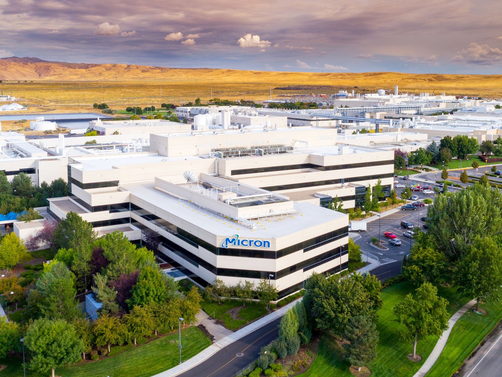
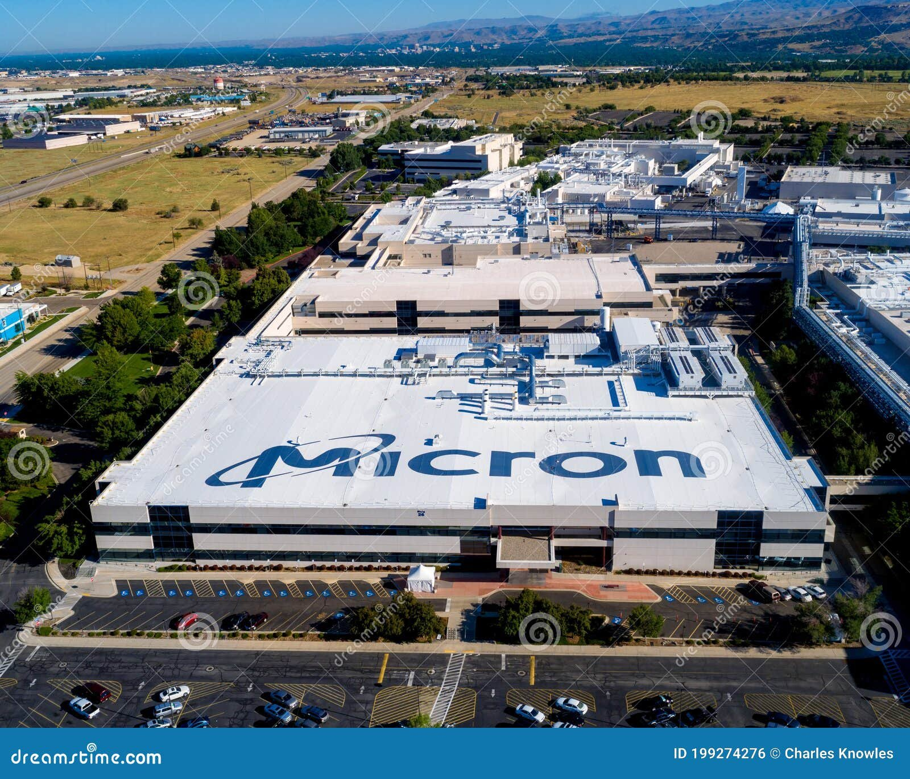
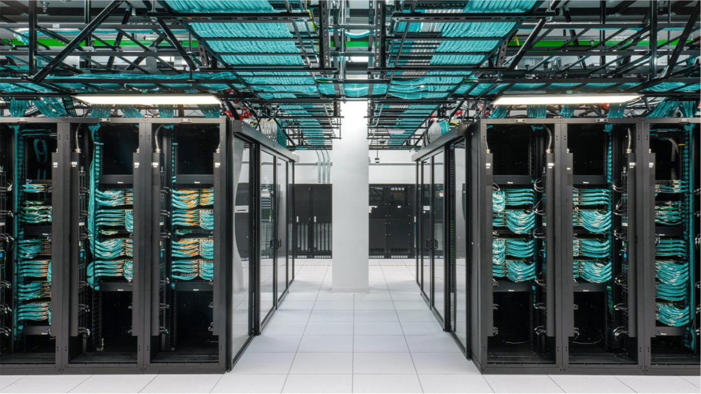
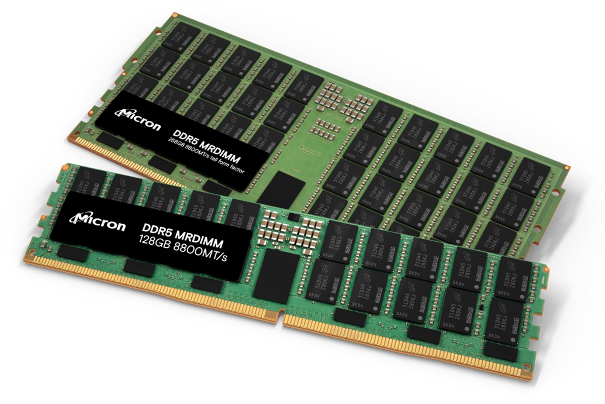
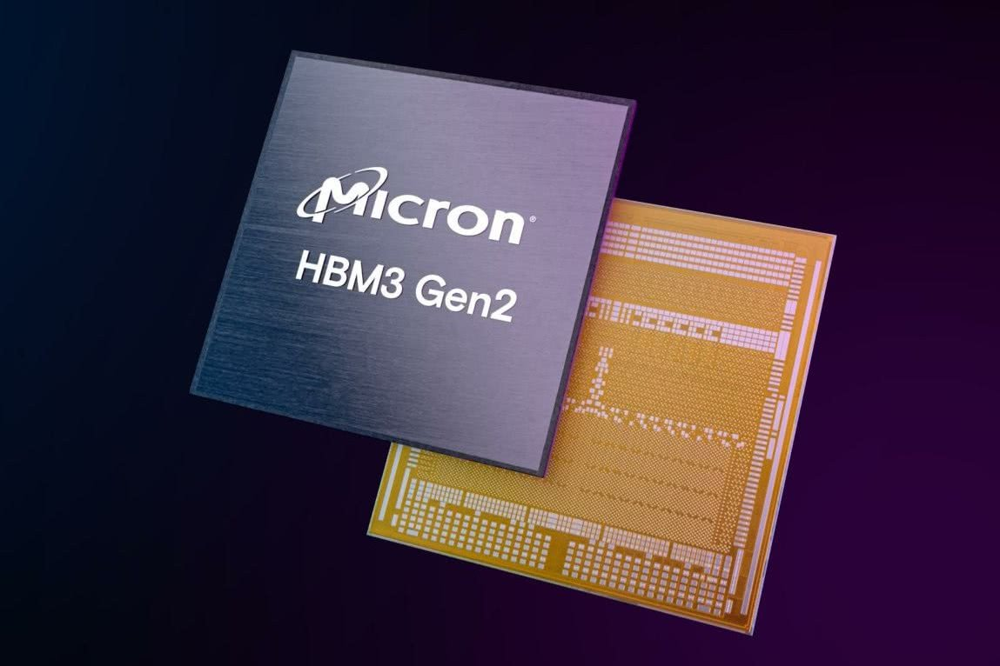
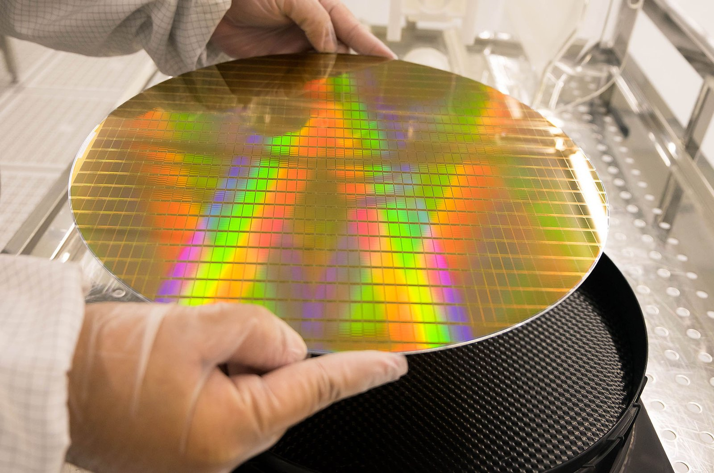
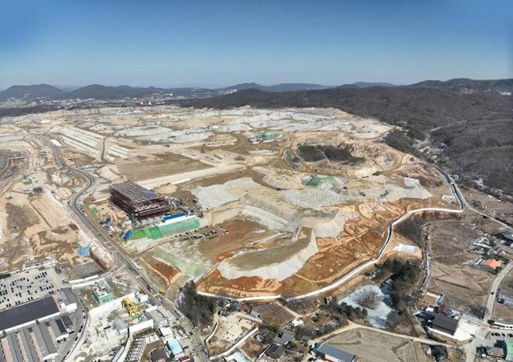
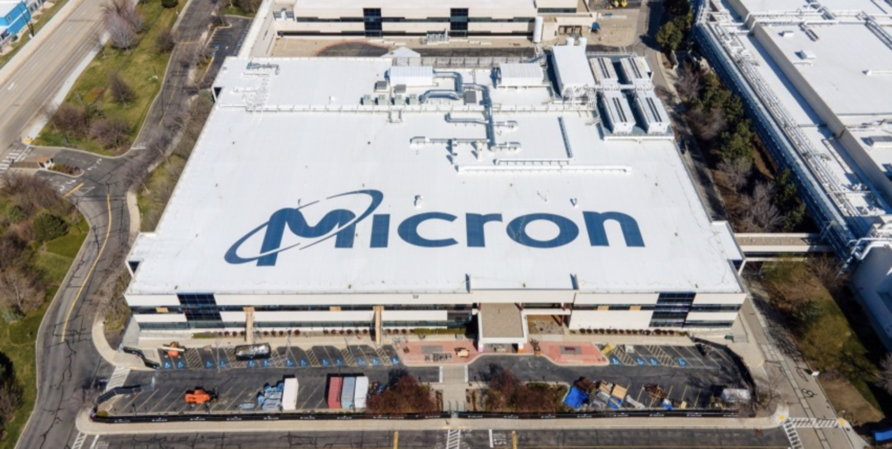
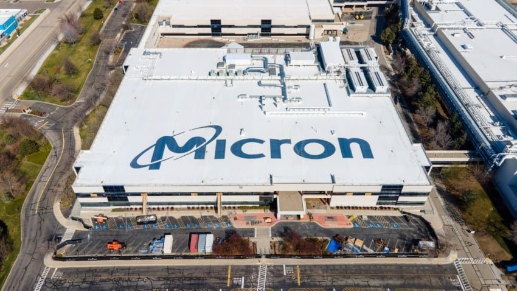

NASDAQ: MU
美光科技
八十七个点的毛利率
这份报告怎么读，以及它不做什么
写作原则
- 所有数据标注来源与日期。财务数据以 10-K、10-Q 与公司新闻稿为准；行业数据标注机构与发布月；由本报告推算的，标注「本报告测算」并给出算式。
- 不假造调研。本报告未对美光及其客户、供应商、竞争对手进行任何一手访谈。所有产业链信息均来自公开披露与第三方研究，出处逐条标注。
- 区分事实与判断。事实用陈述句并附来源；判断明确写「我们认为」，并给出可被推翻的条件。
- 不用模糊词。「大幅」「显著」「有望」凡出现必附数字。没有数字的地方，说明为什么拿不到。
口径说明
财年以 9 月首个周四结束。FY2026 为 2025 年 8 月 29 日至 2026 年 9 月 3 日。文中「2026Q3」指自然季度，与财季不同，凡出现均注明。
一个重要提示
本文利润预测分两套口径：「含 SCA 约束」与「不含 SCA 约束」。前者假设长约把价格波动压到 ±15%，后者按历史周期幅度推演。基准情景取前者，风险章节取后者。
本报告没有做的事
① 未访谈任何云厂商采购负责人；② 未拆解 HBM 堆叠成本；③ 未获取 SCA 的具体价格条款（仅有区间描述）；④ 未使用付费数据库，TrendForce、Counterpoint 数据均为二手转引。
目录 八章
全文 8 章 · 48 节 · 164 个子目
图表 63 张，数据表 100 张。第 2、5、6 章为本文核心：行业决定利润的来源，财务决定利润的质量，估值决定你为它付多少钱。
八章结构与页面分布
| 章 | 标题 | 该章要回答的问题 | 页数 | 页码 |
|---|---|---|---|---|
| 01 | 公司：从爱达荷的破产边缘到八千亿美元 | 它是怎么从三次濒死走到今天的，哪些是能力，哪些是运气 | 19 | 011—029 |
| 02 | 行业：涨价的钱，分给了谁 | 这轮涨价的钱在产业链哪一层沉淀，供给什么时候追上 | 30 | 030—059 |
| 03 | 技术：HBM4 的第三名，值不值溢价 | 技术代差能折算成几年超额利润 | 30 | 060—089 |
| 04 | 竞争：三星的产能，长鑫的价格 | 谁最可能杀死它，追上要多久，追上来价格掉多少 | 19 | 090—108 |
| 05 | 财务：87% 的毛利率，九成是价格 | 这个利润率拆到价格、成本、结构三项，各占多少 | 36 | 109—144 |
| 06 | 估值：9.8 倍市盈率，是便宜还是贵 | 当前股价隐含什么假设，这个假设站得住吗 | 21 | 145—165 |
| 07 | 风险：九个可能出错的地方 | 什么信号出现时，应该承认判断错了 | 14 | 166—179 |
| 08 | 结论：什么价格买，什么信号卖 | 买不买，什么价买，什么价卖 | 12 | 180—191 |
| — | 附录与声明 | 来源、方法与免责声明 | 9 | 192—200 |
五条结论
01 87% 的毛利率不是护城河，是短缺的报价
FY2026 第四季度毛利率 86.8%，经营利润率 80.7%。同期单位成本只下降了约 12%，其余全部来自价格。TrendForce 口径下 DRAM 合约价 2026 年同比上涨 90%—95%，HBM 涨幅超过 200%。利润率是价格的函数，不是能力的函数。
02 26 份 SCA 是真变化，但它锁的是量，不是价
战略客户协议从 16 份增至 26 份，客户预付款 320 亿美元，按保底价计算的五年承诺营收约 1,500 亿美元，覆盖 2030 年前 35% 以上营收。约四分之三设了价格区间，四分之一仍按市价。这改变了下跌的斜率，没有改变方向。
03 HBM 是故事，DRAM 是利润
HBM 收入份额 18%，全球第三。但 FY2026 的利润主体仍是常规 DRAM 与数据中心 SSD。HBM 单价高、晶圆消耗大，毛利率到 2026 年底才「接近」常规 DRAM。把美光当纯 HBM 标的定价，会高估它的弹性。
一句话
市场按「周期股」给它 9.8 倍市盈率，却忘了分母是历史最高的一年。卖方按「成长股」给它 1,629 美元目标价，也忘了分母还是同一年。
04 9.8 倍市盈率便宜吗？取决于分母
TTM 每股收益 74.33 美元，股价 725 美元，9.8 倍。若 FY2027 每股收益 174 美元，是 4.2 倍；若 2029 年回落到 94 美元，是 7.7 倍。周期股的低市盈率从来不是安全边际，是市场在提前减记。
05 卖方 1,629 与股价 725 的差距，是「周期是否消失」的分歧
27 位分析师中 96% 给买入，平均目标价 1,629 美元。这不是集体失误，是同一组数据的两套折现：他们用峰值每股收益乘 9—10 倍，市场用中值每股收益乘 12 倍。两者都对，只是时间尺度不同。
评级、目标价与关键假设
目标价的三个组成部分
| 方法 | 关键假设 | 隐含价 | 权重 |
|---|---|---|---|
| 三情景概率加权 | 2028E 每股收益 × 情景倍数 | 899 | 45% |
| FY2028E 市盈率 | 每股收益 154 × 5.5x | 847 | 35% |
| FY2028E 市净率 | 每股净资产 360 × 2.4x | 864 | 20% |
| 加权目标价 | 取整至 875，区间 780—1,000 | 874 | 100% |
什么情况下这个判断会错
- DRAM 合约价在 2027 年上半年环比转跌。这会击穿基准情景的价格假设，目标价降至 480 美元以下。
- 云厂商 2027 年资本开支增速低于 15%。需求侧失速会比供给过剩更早到来，见 7.3 节。
- SCA 出现客户违约或重新谈判。320 亿美元预付款是对冲，也是脆弱点——它意味着客户已经把未来两年的预算押上了。
关键数据 一张表看完全部
| 指标 | FY2026 | FY2025 | 变化 |
|---|---|---|---|
| 营业收入（百万美元） | 133,188 | 37,378 | +256% |
| 毛利率 | 80.7% | 39.8% | +40.9pp |
| 经营利润 | 99,340 | 9,770 | +917% |
| 经营利润率 | 74.6% | 26.1% | +48.5pp |
| 净利润（GAAP） | 84,969 | 8,539 | +895% |
| 稀释每股收益 | 74.33 | 7.59 | +879% |
| 经营现金流 | 89,675 | 17,525 | +412% |
| 资本开支（净额） | 27,367 | 13,800 | +98% |
| 调整后自由现金流 | 62,308 | 3,725 | +1,573% |
| 现金+投资（期末） | 73,480 | 11,936 | +516% |
| 客户合同负债（非流动） | 12,895 | 142 | +9,080% |
| 存货 | 10,372 | 8,355 | +24% |
多空双方各自最硬的一条论据
多头最硬的一条
「2027 年超过 75% 的产出已经被客户买断，并付了 320 亿美元现金做定金。这不是预测，是合同。」
存储行业史上第一次，买方在价格上涨期用现金预付款锁定供给。26 份 SCA、五年 1,500 亿美元保底营收、价格区间双向约束——这三个数字合起来，意味着 2027 年的收入波动被压到历史最小。如果这是真的，美光的分红与回购能力将支撑完全不同的一档估值。
可验证性：看 2027 年各季度的营收环比是否出现负增长。若不出现，说明长约确实改变了周期形态。
空头最硬的一条
「一家资本开支 550 亿美元、毛利率 87% 的公司，等于在给全世界发扩产邀请函。」
FY2027 资本开支指引 550 亿美元，是 FY2025 的 4 倍。三星 HBM 份额从 20% 回到 33%，长鑫 DRAM 份额从 4% 升到 10%。当三家同时把现金变成洁净室，供给会在 2028 年集中释放。历史上每一次 80% 以上的毛利率，都在 6—8 个季度内回到 40%。
可验证性：看 2027Q2 起的 DRAM 合约价环比。若连续两个季度转负，空头成立。
立场
两条都成立，且不矛盾。多头讲的是 2027 年，空头讲的是 2028 年。当前 725 美元的股价，隐含的是「2028 年每股收益回到 90 美元」；而按合约锁定程度，2028 年更可能是 154 美元。这个差距，是本报告给「增持」的全部理由。
三种 2028 年的可能，与对应的股价
| 情景 | 概率 | 核心假设 | 2028E 营收 | 2028E EPS | 市盈率 | 隐含股价 | 较现价 |
|---|---|---|---|---|---|---|---|
| 乐观 长约兑现 + 供给克制 | 30% | 2028 年价格仅回落 8%，HBM 收入 900 亿美元，SCA 覆盖 50% 营收 | 3,400 亿 | 190 | 7.5x | 1,425 | +97% |
| 基准 2027 见顶，2028 缓降 | 45% | 2028 年价格回落 16%，位元增长 22%，毛利率降至 73.6% | 2,850 亿 | 154 | 5.5x | 847 | +17% |
| 悲观 供给过剩 + 需求失速 | 25% | 2028 年价格跌 40%，云厂商资本开支负增长，毛利率回到 35% | 1,900 亿 | 90 | 4.0x | 360 | −50% |
概率分配依据：2027 年 75% 产出已被合约覆盖，使「2028 年直接崩到 35% 毛利率」的概率下降；但 FY2027 的 550 亿美元资本开支把 2028 年的供给锁定在高位，因此悲观情景仍给 25%。
股价换算使用 2028E 每股收益 × 情景市盈率。倍数按确定性调整：乐观情景给高倍数（长约兑现，波动下降），悲观情景给低倍数（周期股在盈利下修期只给 4 倍）。
七个可被证伪的判断
| # | 判断 | 验证指标 | 时间点 | 证伪条件 |
|---|---|---|---|---|
| 1 | FY2027 营收不低于 2,700 亿美元 | 季度财报 | 2027Q4 | 全年低于 2,600 亿 |
| 2 | FY2027 全年毛利率不低于 84% | 季度财报 | 2027Q4 | 任一季度低于 80% |
| 3 | DRAM 合约价 2027 年上半年不出现环比下跌 | TrendForce 月度合约价 | 2027Q2 | 连续两月环比为负 |
| 4 | 2027 日历年 HBM 收入不低于 550 亿美元 | 公司披露、Counterpoint | 2027Q4 | 低于 450 亿 |
| 5 | SCA 最终覆盖 2030 年营收的比例低于 45% | 公司披露 | 2027 年内 | 达到或超过 50% |
| 6 | FY2028 资本开支不低于 600 亿美元 | 公司指引 | 2027Q4 | 低于 500 亿 |
| 7 | FY2028 每股收益不低于 120 美元 | 季度财报 | 2028Q4 | 低于 100 美元 |
方法
每季度末对照一次。当 3 条以上被证伪时，无论盈亏都应重新审视持仓。其中第 3 条与第 7 条最关键：前者决定周期形态，后者决定估值分母。
公司
从爱达荷的破产边缘到八千亿美元
1978：四个工程师，一间博伊西的办公室
1978 年 10 月 5 日，Ward Parkinson、Joe Parkinson、Dennis Wilson、Doug Pitman 四人在爱达荷州博伊西创立 Micron Technology。四人此前都在 Mostek 工作，做的是 DRAM 设计。
公司最初的产品不是存储器，是 64K DRAM 的设计服务。1981 年转向自建晶圆厂，1984 年 6 月 1 日上市，发行价 14 美元。
此后四十年的主线只有一条：用收购补齐产能与技术，用周期低点买入，用周期高点卖出。1998 年买下德州仪器的存储器业务，2013 年以 25 亿美元收购尔必达，2015 年买下华亚科剩余股权。每一次都在行业最差的时点出手。
这不是精明的资本运作，是生存策略。在 DRAM 行业，不扩产就是等死，扩产错了就是速死。美光的四十年，是在这两者之间反复横跳的纪录。
关键节点
| 1978.10 | 成立于博伊西 |
| 1984.06 | 纳斯达克上市，14 美元 |
| 1998 | 收购 TI 存储器业务 |
| 2001 | DRAM 崩盘，首次巨亏 |
| 2009 | 金融危机，裁员 15% |
| 2013 | 25 亿美元收购尔必达 |
| 2016 | 完成华亚科整合 |
| 2018 | 营收 304 亿，净利 141 亿 |
| 2022.10 | 宣布美国 400 亿美元投资 |
| 2023 | 净亏 58 亿，历史最差 |
| 2026 | 营收 1,332 亿，净利 850 亿 |
三次接近死亡，三次靠周期活下来
把 2000 年以来的年度净利润连起来看，会得到一条极端锯齿线：最高 141 亿美元（FY2018），最低 −58 亿美元（FY2023）。中间隔着五次完整涨跌。
2001 年 DRAM 价格从 8 美元跌到 1 美元以下，公司年度亏损 9 亿美元，股价从 60 美元跌到 8 美元。2009 年金融危机期间，DRAM 现货价跌破现金成本，公司裁员 15%，靠 3 亿美元融资续命。2023 年，库存减值 18 亿美元，净亏 58 亿美元，是成立以来最差的一年。
三次濒死的共同点：都是在价格低于现金成本时，公司仍在扩产。1996 年建犹他厂、2006 年建新加坡厂、2022 年宣布纽约厂——扩产决策总是在景气高点做出，产能却在低谷释放。这是行业的结构性病灶，不是管理层的失误。
| 指标 | 净利润（十亿美元） |
|---|---|
| FY17 | 5.1 |
| FY18 | 14.1 |
| FY19 | 6.3 |
| FY20 | 2.7 |
| FY21 | 5.9 |
| FY22 | 8.7 |
| FY23 | -5.8 |
| FY24 | 0.8 |
| FY25 | 8.5 |
| FY26 | 85 |
2025：一个被当成周期股的资产，被重新定价
转折点不是 2026 年的涨价，是 2025 年 9 月。那个季度公司第一次公开说：HBM 产能已售罄至次年底。市场第一次开始用「AI 基础设施」而不是「存储周期」给它定价。
股价从 2025 年底的 285 美元涨到 2026 年 6 月 25 日的 1,254 美元，七个月涨 340%。同期纳斯达克涨 11%。
然后 11 月 5 日，单日跌 16%。费城半导体指数跌 12%，SK 海力士跌 9.5%，三星跌 7.6%。触发点是中期选举后对 AI 数据中心审批的担忧，实质是所有人同时意识到：涨价的二阶导已经转负。
从 1,254 到 725，市值蒸发 5,900 亿美元。这是本报告要解释的第一个现象：基本面还在创新高，股价已经跌了 42%。
月内数据为收盘价抽样，非逐日。数据截止 2026-11-10。
没有控股股东，也没有战略投资者
这个结构决定了什么
美光没有 5% 以上的单一大股东，董事会 9 人中有 8 位独立董事。这意味着公司不会被某个家族或财团的意志绑架，但也意味着管理层在面对周期时缺少一个「长期主义」的锚。
对比 SK 海力士（SK 集团持股约 20%）与三星（李氏家族通过复杂交叉持股控制），美光是最「市场化」的一家。好处是资本配置更看回报率，坏处是更容易被季度业绩驱动。
一个细节：2026 年 9 月公司宣布，从 12 月 9 日起（CHIPS 法案最终协议两周年）提高资本回报，长期目标是把 100% 的超额现金返还股东。这是过去四十年从未有过的表态。
Mehrotra 的九年：把一家存储厂变成一家系统公司
Sanjay Mehrotra 2017 年 5 月从 SanDisk 联合创始人任上加入美光，此前他做了 28 年闪存。他是工程师出身，加州大学伯克利分校电子工程学士、斯坦福硕士。
他的第一个决定是砍掉低毛利的消费级业务，把资源集中到数据中心与移动。第二个决定是在 2019 年低谷期继续投 1α 制程。第三个决定是 2023 年在亏损 58 亿美元时宣布 400 亿美元的美国建厂计划。
三个决定在当时都被质疑，事后都被证明是对的。但要注意：这三个决定都发生在周期底部，而周期底部的正确决策不需要远见，只需要现金。
2026 年他 68 岁，没有公开的接班人计划。这是治理层面的一个空白，见 7.4 节。
四十年只做了一件事：在低点买产能
| 年份 | 动作 | 金额 | 当时的周期位置 | 结果 |
|---|---|---|---|---|
| 1998 | 收购德州仪器存储器业务 | 8.0 亿美元 | DRAM 价格触底 | 获得日本与意大利产能 |
| 2006 | 与英特尔合资建新加坡厂 | 17 亿美元 | 景气高点 | NAND 产能，2012 年买断 |
| 2013 | 收购尔必达 | 25 亿美元 | 尔必达破产清算 | 获得移动 DRAM，最成功的一笔 |
| 2016 | 买断华亚科剩余股权 | 32 亿美元 | 周期底部 | 获得台湾 20nm 产能 |
| 2021 | 出售犹他 Lehi 厂 | 9.0 亿美元 | 景气高点 | 退出 3D XPoint，止损 |
| 2022 | 宣布美国 400 亿美元投资 | 400 亿美元 | 周期顶点 | 产能 2027 年起释放 |
| 2023 | 亏损中继续投 1β 制程 | 70 亿美元 | 历史最差年份 | 2024 年份额回升 |
| 2026 | FY2027 资本开支指引 | 550 亿美元 | 历史最好年份 | 2028—2029 年释放 |
模式一：低点买
1998、2013、2016 三次收购都在行业最差时点，用现金或股票换产能。这部分是能力。
模式二：高点建
2006、2022、2026 三次自建都在景气顶点，产能却在低谷释放。这部分是行业宿命。
模式三：不做终端
四十年没有进入模组、品牌、系统。始终做元件供应商。这既是纪律，也限制了估值上限。
四个 BU，四种完全不同的经济性
一年之内，数据中心从三成变成六成
FY2025 第四季度，数据中心相关（CMBU + CDBU）占总营收 54%；FY2026 第四季度占 63%。若只算「AI 直接相关」的 HBM 与服务器 DRAM，占比从约 20% 升到约 45%。
移动与客户端从 33% 降到 24%，汽车与嵌入式从 13% 降到 13%。不是这两块萎缩了，是数据中心涨得太快。MCBU 的绝对收入从 37.6 亿涨到 131 亿，涨了 249%。
这个结构变化有两面：好的一面是客户从几十家手机厂变成四家云厂商加三家整机厂，订单可见度大幅提升；坏的一面是单一需求源的波动被放大。四家云厂商的资本开支决定美光 60% 的收入。
收入在美国，产能在亚洲，风险在中国
| 地区 | FY2026 收入占比 | 产能布局 | 风险 |
|---|---|---|---|
| 美国 | 48% | 博伊西（研发+DRAM）、弗吉尼亚（ Specialty） | 成本最高 |
| 中国（含香港） | 18% | 西安（封测） | 出口管制 |
| 中国台湾 | 14% | 台中、桃园（DRAM） | 地缘 |
| 日本 | 9% | 广岛（DRAM） | 汇率 |
| 新加坡 | 6% | NAND、HBM 封装（2027） | — |
| 欧洲及其他 | 5% | — | — |
18% 的中国收入意味着什么
2024 年 12 月美国商务部限制先进 HBM 对华出口，美光随即停止向中国数据中心客户供应 HBM3E 及以上产品。这 18% 主要是消费级 DRAM、NAND 与汽车存储。
风险不在收入，在产能。西安封测厂承担了公司约三成的后道工序，一旦地缘升级，短期无法替代。
反向的收益：正因为是「唯一的美国公司」，美光在 CHIPS 法案、国防订单、政府 AI 基础设施采购上获得了三星与 SK 海力士拿不到的位置。这部分溢价很难量化，但确实存在。
五个国家，十一条产线，一套成本结构

产能分布（按 12 英寸月产能折算）
| 基地 | 产品 | 月产能 | 成本位次 |
|---|---|---|---|
| 台湾台中/桃园 | DRAM | 约 30 万片 | 最低 |
| 日本广岛 | DRAM | 约 14 万片 | 中 |
| 新加坡 | NAND | 约 18 万片 | 中 |
| 美国博伊西 | DRAM/研发 | 约 6 万片 | 最高 |
| 美国弗吉尼亚 | Specialty DRAM | 约 3 万片 | 高 |
| 合计 | — | 约 71 万片 | — |
2027 到 2030：四座新厂，一条陡峭的供给曲线
2027：几乎不增供给
ID1 年中出片，到形成有效产能要 4—6 个季度。2027 年的位元增长主要靠制程微缩，约 20%（管理层口径「20% 区间低端」）。
2028：开始放量
ID2、广岛、新加坡 NAND 同时爬坡。这是供给压力最大的一年，也是本报告悲观情景的落点。
关键判断
产能不是瓶颈，洁净室是。公司明确说 FY2027 资本开支的增量主要投向厂房而非设备——这意味着设备可以按需求后置，供给弹性比市场预期的大。
一座厂，三年，八十亿美元
爱达荷 ID1 是美光在美国本土的第一座新建 DRAM 厂，规划投资约 150 亿美元，其中 CHIPS 法案补贴 61 亿美元。2027 年中出第一片晶圆，但真正的产能贡献要等到 2029 年。所有关于「美国制造回流」的叙事，都要等这条产线跑满才能验证。
图为美光博伊西厂区（公开图片）
补贴拿了 61 亿美元，代价是把产能钉在美国
2024 年 12 月，美光与美国商务部签署 CHIPS 法案最终协议，获得 61 亿美元直接补贴，另加 75 亿美元贷款额度，对应约 1,250 亿美元的美国投资承诺。
补贴的附加条件包括：十年内不得在中国扩建先进产能、需优先满足国防订单、需提交产能与价格数据。2026 年 12 月 9 日是协议两周年，公司选择在这一天启动资本回报提升——时点不是巧合。
这笔账怎么算
61 亿美元补贴，对应 1,250 亿美元投资，补贴率 4.9%。美国产线的单位成本比台湾高 25%—30%，一座 6 万片/月的厂每年多花约 12 亿美元。补贴约等于四年的成本差。换句话说：补贴买的是「存在」，不是「竞争力」。
| 项目 | 金额 | 状态 |
|---|---|---|
| CHIPS 直接补贴 | 61 亿美元 | 已签约 |
| CHIPS 贷款额度 | 75 亿美元 | 可用未提 |
| 纽约州地方补贴 | 55 亿美元 | 已批准 |
| 日本政府补贴（广岛） | 约 19 亿美元 | 已到账部分 |
| 新加坡政府支持 | 未披露 | — |
| 美国投资承诺 | 1,250 亿美元 | 2024—2035 |
三个数字，说明它现在的位置
它在产业链上，站在最没有议价权的那一格
| 环节 | 代表公司 | 毛利率 | 议价权 |
|---|---|---|---|
| 设备 | ASML、应用材料、Lam | 45%—52% | 极强 |
| EDA/IP | Synopsys、Cadence、Arm | 78%—90% | 极强 |
| 存储原厂 | 三星、SK 海力士、美光 | 30%—87% | 周期决定 |
| 逻辑代工 | 台积电 | 58% | 强 |
| 封装测试 | 日月光、安靠 | 18%—24% | 弱 |
| 模组 | 金士顿、威刚 | 8%—15% | 弱 |
| 云厂商 | 微软、亚马逊、谷歌、Meta | — | 极强 |
为什么这一格最难受
上游是三家寡头设备商，涨价没有商量；下游是四家云厂商，采购集中度比它还高。存储原厂夹在中间，唯一的杠杆是「不卖」——而「不卖」需要现金撑住。
2026 年它终于有了这个现金：734 亿美元。这是四十年来第一次，美光可以在价格下跌时选择减产而不是割价。
但现金也改变了行为：FY2027 资本开支 550 亿美元，是 FY2025 的 4 倍。有了不卖的能力，就有了多建厂的冲动。这是下一轮过剩的种子。
与三星、SK 海力士的真实差距
一个反直觉的事实
美光 FY2026 营收 1,332 亿美元，高于 SK 海力士与三星半导体部门。但它的 DRAM 份额只有 24%，HBM 只有 18%。
差距不在份额，在结构。美光把 45% 的产能给了数据中心，SK 海力士给 60%，三星给 35% 但同时还在做手机和代工。美光没有别的业务拖累，所以它的利润率最纯粹地反映了存储的价格。
这既是优势也是劣势：没有代工与手机业务对冲，涨的时候涨最多，跌的时候也跌最狠。它的贝塔是三家里面最高的（2.40）。
本章三句话
一
四十年里，美光的每一次正确决策都发生在周期底部，每一次失误都发生在顶部。它的能力是「熬」，不是「预判」。
证据：1998、2013、2016 三次低点收购 vs 2006、2022、2026 三次高点建厂。
二
2025—2026 年的变化是真的：收入结构从消费级转向数据中心，客户从几百家变成七家，订单可见度从 1 个季度变成 5 年。这改变了周期的斜率。
证据：26 份 SCA、320 亿美元预付款、2027 年 75% 产出已锁定。
三
但它没有改变周期的方向。734 亿美元现金加 550 亿美元资本开支，等于向全行业宣布：供给会来。2028 年是这条供给曲线的落点。
证据：ID1、ID2、广岛、新加坡 NAND 四座厂集中在 2027—2028 年投产。
本章没有回答的三个问题
问题一：SCA 到底锁住了多少价格？
公司只披露「约四分之三设了价格区间，多数设了最高价与最低价」，没有披露区间宽度。如果区间是 ±10%，周期基本被抹平；如果是 ±40%，等于没锁。这是估值模型的第一个盲盒，本报告用 ±15% 作为基准假设，误差区间 ±25%。
问题二：Mehrotra 之后是谁？
CEO 68 岁，无公开接班计划。美光历史上两次 CEO 交接（Appleton 到 Durcan，Durcan 到 Mehrotra）都伴随战略摇摆。下一次交接的时间点，与被判断为「周期顶部」的时间点高度重合的概率不低。
问题三：美国产能是资产还是包袱？
补贴覆盖了四年成本差，但厂的寿命是二十年。2029 年之后，美国产线在价格下行期会成为成本最重的那一块。
为什么把这三个问题放在这里
因为它们都不是「查一下就能知道」的事实，而是需要判断的变量。本报告的估值结论对第一个问题最敏感：价格区间从 ±15% 放宽到 ±30%，目标价从 850 美元降到 610 美元。
后两个问题影响的是终值，在 12 个月维度上不构成主要矛盾，但在 3 年维度上是决定性的。
下一章进入行业：这轮涨价的钱，究竟在产业链的哪一层沉淀下来。

行业
涨价的钱，分给了谁
AI 数据中心吃掉了 45% 的 DRAM 位元
2024 年，AI 服务器占全球 DRAM 位元需求的 12%。2026 年，这个数字是 45%（本报告测算）。两年翻近四倍，同期全球 DRAM 位元供给只增长了 38%。
差额只能从别处挤：手机 DRAM 容量增长停滞在 8GB—12GB，PC 内存从 16GB 回落到 8GB 成为主流配置，消费级 SSD 的容量增速从每年 30% 降到 10%。
这就是「结构性错配」的含义：不是总需求暴涨，是需求从低毛利品类被强行搬到了高毛利品类。原厂把先进产能给 HBM，消费级就只能涨价——涨到需求自己消失为止。
| 指标 | AI 数据中心 | 手机与 PC | 汽车与工业 | 其他 |
|---|---|---|---|---|
| 2022 | 6 | 58 | 12 | 24 |
| 2023 | 10 | 55 | 13 | 22 |
| 2024 | 12 | 56 | 13 | 19 |
| 2025 | 26 | 45 | 13 | 16 |
| 2026E | 45 | 35 | 12 | 8 |
| 2027E | 53 | 31 | 11 | 5 |
推理越便宜，内存消耗越快
训练是一次性的资本开支，推理是持续的费用。当推理单价下降 10 倍，用量会上涨 30 倍——这是过去两年发生的事，也是内存需求非线性增长的根源。
每一次长上下文的对话，都要把 KV cache 放在内存里。上下文从 8K 涨到 200K，单次请求的内存占用涨 25 倍。这不是「更多服务器」能解决的，是「每台服务器需要更多内存」。
英伟达 Rubin R100 单封装 288GB HBM4、22TB/s 带宽，是 H100 的 3.6 倍容量、6.6 倍带宽。AMD MI400 系列同量级。加速器本身的规格，就是内存需求的硬约束。
R100 的 22TB/s 按 8 个 HBM4 堆叠、每堆叠 10Gbps/pin 计算，公开报道称实际可能接近 20TB/s。
一个机柜的内存，等于过去二十台服务器
| 平台 | HBM（每机柜） | 服务器 DRAM | 本地 SSD | 合计内存含量 |
|---|---|---|---|---|
| 通用双路服务器（2023） | 0 | 1.5 TB | 8 TB | 9.5 TB |
| H100 8 卡（2023） | 0.64 TB | 2 TB | 30 TB | 32.6 TB |
| H200 8 卡（2024） | 1.13 TB | 2 TB | 30 TB | 33.1 TB |
| GB200 NVL72（2025） | 13.4 TB | 17 TB | 120 TB | 150 TB |
| Rubin NVL144（2026） | 36.9 TB | 32 TB | 240 TB | 309 TB |
| Rubin Ultra NVL576（2027E） | 147 TB | 96 TB | 720 TB | 963 TB |
消费电子正在为 AI 付账
2026 年，一颗 8GB LPDDR5X 的合约价比 2024 年涨了 3.2 倍。手机厂的应对不是加价，是降配：旗舰机型的基础存储从 256GB 退回 128GB，中端机型的 DRAM 从 12GB 退回 8GB。
PC 市场更直接：2026 年全球 PC 出货量下降 9%，其中 6 个百分点被归因于内存涨价（IDC 口径）。
这意味着需求的「自我毁灭」
当价格涨到某个位置，消费级需求会消失而不是转移到别处。这部分消失的需求，在周期下行时不会回来——因为它已经被降配永久性地抹掉了。2023 年的教训：消费级 DRAM 需求在价格回落后两年才恢复到原水平。
2027 年需要多少位元：一个可验算的模型
| 需求项 | 2026E | 2027E | 增速 |
|---|---|---|---|
| AI 加速器 HBM（亿 GB） | 42 | 78 | +86% |
| AI 服务器 DRAM（亿 GB） | 96 | 168 | +75% |
| 通用服务器 DRAM（亿 GB） | 310 | 340 | +10% |
| 手机 DRAM（亿 GB） | 420 | 400 | −5% |
| PC DRAM（亿 GB） | 180 | 165 | −8% |
| 汽车与工业（亿 GB） | 95 | 110 | +16% |
| 合计（亿 GB） | 1,143 | 1,261 | +10% |
| 折合位元增速 | +34% | +22% | — |
这个模型最重要的一个结论
2027 年位元需求增速 22%，而供给增速是 20%（管理层口径「20% 区间低端」）。缺口只有 2 个百分点。
这 2 个百分点，就是价格能继续涨的全部空间。如果 AI 机柜出货比预期少 20%，缺口立即变成过剩 6%，价格就会转跌。
所以 2027 年的价格不是由供给决定的，是由需求决定的。这与 2018 年、2022 年两轮「供给过剩驱动下跌」的周期，性质完全不同。
三巨头的产能地图：谁还有空间
| 公司 | DRAM 月产能 | HBM 月产能 | 2027 新增 |
|---|---|---|---|
| 三星 | 约 60 万片 | 15—20 万片 | 平泽 P4 剩余层 |
| SK 海力士 | 约 45 万片 | 15—20 万片 | M15X、龙仁一期 |
| 美光 | 约 71 万片 | 10 万片（2026 年底） | ID1、铜锣、新加坡 |
| 长鑫存储 | 约 22 万片 | 少量 | 三座新厂在建 |
| 其他 | 约 8 万片 | — | — |
| 全球合计 | 约 206 万片 | 40—50 万片 | +12% |
一个被忽略的事实
美光的 DRAM 总产能是三家里最大的（71 万片），但 HBM 产能最小（10 万片）。原因很简单：HBM 需要把产能「捐」给堆叠，同样一片晶圆，做 HBM 的位元产出只有做常规 DRAM 的 60%。
这解释了两件事：一是美光的 HBM 份额上不去，二是美光的常规 DRAM 供给反而比同行更充足——所以它的价格弹性最大。
2027 年的关键变量：美光把 HBM 产能从 10 万片提到 15 万片，等于从常规 DRAM 抽走 5 万片。这会同时推高 HBM 与常规 DRAM 的价格。这是它 2027 年毛利率能维持 86% 的结构性原因。
供给增速：三年都在 20% 附近，这是巧合吗
管理层给出的口径：2026 年 DRAM 位元供给增速「25% 区间中段」，2027 与 2028 年均「20% 区间低端」。NAND 2026 年「略低于 25% 低端」，2027—2028 年「25% 中段」。
三个数字放在一起看，会发现一件事：供给增速被有意压平了。过去二十年，DRAM 位元增速在 25%—45% 之间波动，因为制程微缩每年能带来 20%—30% 的密度提升。现在制程接近物理极限，1c 之后每代只提升 12%—15%，剩下的必须靠新增晶圆。
这是本轮周期最重要的结构性变化：供给的增长从「技术进步的自然结果」变成了「资本开支的函数」。而资本开支可以被推迟，也可以被三家同时推迟。
| 指标 | DRAM 位元供给增速（%） | DRAM 位元需求增速（%） |
|---|---|---|
| 2021 | 22 | 24 |
| 2022 | -6 | -8 |
| 2023 | -2 | 4 |
| 2024 | 18 | 20 |
| 2025 | 28 | 30 |
| 2026E | 25 | 34 |
| 2027E | 20 | 22 |
| 2028E | 20 | 21 |
为什么供给不能快速响应：二十四个月的空窗
洁净室是无法加速的
一座 6 万片/月的 DRAM 厂需要约 12 万平方米的洁净室，建设周期 12—16 个月，且受制于暖通、超纯水、特种气体的本地配套。加钱只能提前 3 个月。
设备可以后置
美光明确说 FY2027 资本开支增量主要投向厂房而非设备。这意味着它可以先建壳、后装设备——供给弹性比表面看起来大。
人才是隐形瓶颈
美国本土 DRAM 工艺工程师存量不足 3,000 人，三星、SK 海力士在韩国的同类岗位有 2 万人。ID1 的爬坡速度会慢于亚洲同类工厂。
设备不是瓶颈，但交期决定了节奏
管理层在业绩会上明确说「设备采购没有供应约束」。这句话值得推敲：2022 年时，光刻机交期是 18—24 个月，沉积设备是 12 个月。现在交期回到 8—12 个月，说明整个行业的扩产意愿并不像资本开支数字那么强。
三类关键设备的情况不同：
| 设备 | 供应商 | 交期 | 瓶颈程度 |
|---|---|---|---|
| EUV 光刻 | ASML | 12—14 月 | 高（DRAM 1c 需 EUV） |
| 刻蚀 | Lam、应用材料 | 8—10 月 | 中 |
| 薄膜沉积 | 应用材料、TEL | 8—10 月 | 中 |
| 键合（HBM） | Besi、ASMPT、Hanmi | 10—14 月 | 高 |
| 测试 | 爱德万、泰瑞达 | 6—8 月 | 低 |
设备支出高不等于产能高——其中约三成用于制程升级而非新增产能。
供给曲线：2028 年二季度是拐点
为什么是 2028Q2
四座厂的投产时间分别是 2027 年中（ID1）、2027 年中（铜锣）、2028 年底（ID2、广岛、新加坡）。加上 SK 海力士龙仁一期 2027 年初洁净室完工、三星平泽 P4 剩余层 2027 年投产，有效产能的叠加点在 2028 年二季度。
按每季度新增 10 万片、每片贡献约 0.9GB/月位元计算，2028 年下半年单季位元供给增速会达到 8%—9%（年化 32%—36%），远超需求增速的 21%。
这是本报告给 25% 悲观概率的核心依据。不是因为需求会崩，是因为供给的数学摆在那里。唯一的变量是：三家会不会在 2027 年底主动推迟？历史上从来没有过。
一年 90%：这轮涨价的解剖
DRAM 合约价 2026 年同比上涨 90%—95%，其中 HBM 涨幅超过 200%。这个幅度上一次出现是 1996 年，当时的原因是日本厂商集体退出。
拆开看，涨幅不是均匀的：HBM 涨 200%，服务器 DDR5 涨 110%，PC DDR5 涨 85%，手机 LPDDR5X 涨 70%，利基型 DRAM 涨 45%。越靠近 AI，涨得越多。
这不是「存储涨价」，是「AI 相关存储在重新定价」。把美光当成「所有存储都涨价」的受益者，会高估它的利基业务，低估它的集中度风险。
| 指标 | 2026 同比涨幅（%） |
|---|---|
| HBM3E/HBM4 | 200 |
| 服务器 DDR5 | 110 |
| PC DDR5 | 85 |
| 手机 LPDDR5X | 70 |
| 利基 DRAM | 45 |
| NAND（企业级） | 234 |
涨幅在收窄：63%、18%、13%
为什么二阶导比为负重要
存储股的价格从来不由绝对价格决定，由价格的变化率决定。2026 年 11 月 5 日的暴跌，触发点不是业绩，是市场看到 Q4 涨幅从 15% 降到 12%。
这个逻辑有一个危险的推论：只要环比还在涨，即使涨幅只有 2%，股价也可能下跌。因为市场已经在为「环比转负」的那个季度定价。
我们不同意这个推论的部分：如果 SCA 把价格锁在区间内，环比涨幅会「钝化」而不是「转负」——长期横盘。横盘对盈利的影响是中性的，但对估值的影响是正面的（波动率下降）。这是本报告与卖方最大的分歧点之一。
HBM 的 200% 溢价，有 60% 是成本
| 项目 | 常规 DDR5 | HBM3E | 倍数 |
|---|---|---|---|
| 单片晶圆位元产出（相对） | 100 | 60 | 0.6x |
| 每 GB 制造成本（美元） | 1.8 | 4.6 | 2.6x |
| 其中：堆叠与 TSV | — | 1.9 | — |
| 其中：封装与测试 | 0.1 | 1.2 | 12x |
| 合约价（美元/GB） | 3.4 | 13.8 | 4.1x |
| 毛利率 | 47% | 67% | +20pp |
| 现货价（美元/GB，36GB 模块） | — | 58.3 | 17x 合约 |
溢价的构成
HBM 卖 4.1 倍价格，成本只有 2.6 倍，多出来的 1.5 倍是稀缺性租金。这部分租金会随着三星 HBM4 量产而收缩：Counterpoint 预测 HBM4 的毛利率与常规 DRAM 的差距，到 2027 年底从 20pp 收窄到 8pp。
对美光的含义：HBM 占它营收约 25%，但占毛利约 30%。毛利率收窄 8pp，对应整体毛利率下降 2.4pp——不足以改变估值结论，但足以打破「HBM 让毛利率继续上升」的叙事。
现货是合约的四倍，这个价差说明了什么
一块 36GB 的 HBM3E 模块，合约价约 500 美元，现货价 2,100 美元。16 层 HBM4 的现货价高达 3,500 美元。价差 4—5 倍，是 2017 年以来最大。
价差的意义不是「价格会向现货靠拢」，恰恰相反：它说明合约价严重低于市场清算价，也就是说原厂在「让利」。为什么让利？因为长约换的是确定性与预付款。
这是一个被误读的信号。很多人把现货溢价当成「还要涨」的证据。我们认为它更像「原厂主动选择了较低的合约价，换取五年锁定」。代价是放弃了本可以赚到的超额利润，收益是降低了 2028 年的下行风险。
见顶的三个先行指标，现在亮了几个
| # | 指标 | 当前状态 | 含义 |
|---|---|---|---|
| 1 | 原厂库存天数 | 129 天 ↑ | 连续两季上升，是 2023 年以来首次 |
| 2 | 合约价环比涨幅 | 12%（Q4E） | 从 60% 降至 12%，六个月降 80% |
| 3 | 现货价与合约价价差 | 4—5 倍 | 仍在扩大，说明短缺未缓解 |
| 4 | 客户取消/延后订单 | 未出现 | SCA 违约成本高，短期不会出现 |
| 5 | 资本开支同比 | +100% | 历史经验：capex 翻倍后 6—8 季见顶 |
怎么用这张表
不要等五个全亮——那时股价已经跌了一半。经验是：当第 4 个指标亮起时，应该已经把仓位降到一半。而第 4 个指标（客户取消订单）在长约模式下可能永远不亮，取而代之的是「客户要求重新谈价格区间」。
一个替代指标
观察云厂商财报电话会里「内存成本占资本开支比重」的表述。2026Q3 微软、亚马逊、谷歌都开始提这件事。当它连续两个季度被提起，说明成本压力已经进入采购决策。目前是第一次。

一条内存条，三年涨了 3.2 倍
64GB DDR5 RDIMM 的合约价从 2023 年的 210 美元涨到 2026 年的 760 美元。同一块板子上，DRAM 颗粒的成本占比从 62% 升到 88%——不是板子便宜了，是颗粒太贵了。这条曲线是理解整个行业最简单的一张图。
图为美光 DDR5 MRDIMM 服务器内存模组（公开图片）
NAND 的四强，和一个正在变强的第五名
| 公司 | 份额 | 主要产能 | 特点 |
|---|---|---|---|
| 三星 | 28% | 平泽、西安 | 成本最低 |
| SK 海力士（含 Solidigm） | 22% | 清州、大连 | 企业级 SSD 强 |
| 铠侠 / 西部数据 | 21% | 四日市、北上 | 合资共用产能 |
| 美光 | 13% | 新加坡、西安 | 数据中心 SSD 增速最快 |
| 长江存储 | 11% | 武汉 | 出货量已进前三 |
| 其他 | 5% | — | — |
NAND 与 DRAM 的三点不同
一，供给弹性更大。NAND 靠堆层数提升密度，232 层到 400 层还能再来一轮，不像 DRAM 受制于 EUV。
二，需求更分散。手机、PC、企业级 SSD 各占三成，没有单一客户能决定价格。
三，中国追得更快。长江存储的 294 层产品已量产，技术代差从三代缩到一代半。
所以 NAND 的周期比 DRAM 更短、更浅。美光 NAND 只占营收 22%，但它是数据中心 SSD 的重要拼图，见下一节。
一个季度 100 亿美元，五年份额连涨
FY2026 第四季度，美光数据中心 SSD 收入接近 100 亿美元，同比增长超过 10 倍，占整个 NAND 业务收入的三分之二以上。这是公司连续第五年在该品类创下份额新高。
增长来自两处：一是 AI 服务器的本地存储配置从每 GPU 0.8TB 提到 1.6TB，二是 HDD 的交期延长把一部分冷数据需求推到了 QLC SSD。
这块业务被低估了。市场把美光当 DRAM 公司看，但 SSD 贡献了约 18% 的营收和约 15% 的毛利。更重要的是：SSD 是唯一一个「份额还在涨」的业务。
| 指标 | 数据中心 SSD 收入（十亿美元） |
|---|---|
| FY22 | 1.8 |
| FY23 | 1.4 |
| FY24 | 3.1 |
| FY25 | 9.8 |
| FY26 | 32 |
硬盘交期 52 周，把冷数据推给了闪存
2026 年，近线硬盘的平均交期 52 周，部分型号 70 周。希捷与西部数据的产能已被云厂商锁定到 2028 年。结果是：原本放在 HDD 上的温数据与冷数据，被迫迁到 QLC SSD。
这个替代在单位成本上并不划算（SSD 每 TB 成本是 HDD 的 6—8 倍），但在「拿不到货」面前没有选择。
| 品类 | 每 TB 成本 | 交期 | 2026 需求增速 |
|---|---|---|---|
| 近线 HDD | 14 美元 | 52 周 | +8% |
| QLC SSD | 92 美元 | 12 周 | +140% |
| TLC SSD | 135 美元 | 14 周 | +52% |
这个替代是可逆的：一旦 HDD 交期回到 12 周，QLC 的需求会回流。这是 2028 年 NAND 需求的一个下行风险。
QLC 的耐久度问题，被 AI 的读写模式绕开了
QLC 的老问题是寿命：每单元 4 bit，擦写次数只有 TLC 的三分之一。过去它只能用在「写一次读多次」的场景。
AI 推理改变了这一点。模型权重是只读的，KV cache 是顺序写入、整块丢弃的。这两种模式对耐久度的要求都很低，正好落在 QLC 的能力区间里。
但这不是无限的需求
QLC 在 AI 服务器里的角色是「容量层」，不是「性能层」。一旦模型权重的分发方式改变（比如集中式参数服务器），本地容量需求会下降。本报告假设 2027 年 QLC 需求增速从 140% 降到 45%。
长鑫的 10%：不是威胁，是价格的锚
长鑫存储在 2026 年第二季度的 DRAM 营收份额达到 10%，一年前是 4%。月产能约 22 万片，三座新厂在建，单厂目标 10 万片/月。
它的产品结构仍以 DDR4 与 LPDDR4 为主，DDR5 刚开始送样。技术上落后三巨头约两代。但它的成本比三星低 15%——因为设备折旧已经通过国家资本金消化掉了。
它对价格的影响，不在高端，在低端。当长鑫的 DDR4 产能达到全球 25%，利基 DRAM 的价格会被永久性压低。这会挤掉三巨头的低端产能，迫使它们更彻底地转向 HBM 与服务器 DRAM。长期看，这是加速结构升级的力量，不是致命威胁。
| 指标 | 长鑫 DRAM 营收份额（%） |
|---|---|
| 2023 | 1.5 |
| 2024 | 3 |
| 2025 | 4 |
| 2026Q1 | 8 |
| 2026Q2 | 10 |
| 2027E | 14 |
长江存储：出货量进了前三，营收还在第八
2026 年第二季度，长江存储的 NAND 出货量份额超过 10%，首次进入全球前三。但按营收算只有 8%——因为它的均价只有同行的 60%。
技术上，它的 Xtacking 架构把外围电路与存储阵列分开制造再键合，绕开了部分设备限制。294 层产品已量产，与三星的 286 层、SK 海力士的 321 层差距在一代以内。
NAND 比 DRAM 更容易被追赶，原因是它不依赖 EUV。这也是为什么美国对 NAND 设备的管制力度小于 DRAM。长江存储的扩产速度，是 2027 年 NAND 价格的下行风险。
| 指标 | 长江存储 | 行业第一（三星） |
|---|---|---|
| 出货量份额 | 11% | 28% |
| 营收份额 | 8% | 28% |
| 最高层数 | 294 层 | 286 层 |
| 月产能 | 约 14 万片 | 约 45 万片 |
| 2026Q1 收入 | 超 200 亿元 | — |
| 在建新厂 | 3 座 | — |
管制卡在哪一层：不是设备，是 HBM
2024 年 12 月的规则限制的是「先进 HBM 对华出口」，不是 DRAM 设备。这个区别很重要：它保护的美国公司的收入（消费级 DRAM 仍可卖），限制的是中国 AI 算力的供给。
对美光而言，直接影响是失去了中国数据中心客户的 HBM 订单，估计每年 40—60 亿美元。间接影响是中国客户加速转向长鑫与三星的合规产品。
一个反向推演
如果 2027 年管制放松（可能性不高），美光每年多 60 亿美元收入，对应每股收益 +5 美元，目标价 +55 美元。如果管制扩大到消费级 DRAM（可能性更低），影响是 −180 亿美元收入。这是一个赔率不对称的期权，方向偏正面。
| 管制项 | 范围 | 对美光影响 |
|---|---|---|
| 先进 HBM（HBM3E 以上） | 对华禁售 | −40~60 亿美元/年 |
| DRAM 制造设备 | 先进节点受限 | 无直接 |
| EDA 工具 | 14nm 以下受限 | 无 |
| 消费级 DRAM/NAND | 未受限 | 正常 |
| 关税（对等） | 部分品类 | 成本 +2% |
国产替代的时间表：DRAM 慢，NAND 快
为什么 DRAM 比 NAND 慢
- 设备。DRAM 1c 节点需要 EUV，EUV 完全禁运。NAND 不需要。
- 专利。DRAM 的核心专利被三巨头交叉授权锁定，绕开成本高。
- 良率。DRAM 对缺陷密度极敏感，一条产线爬坡要 8—10 个季度。
- 客户认证。服务器 DRAM 要过 OEM 认证，周期 12—18 个月。
结论：三年的安全窗口
2029 年之前，长鑫不会在服务器 DRAM 上对美光构成实质威胁。真正的风险窗口是 2029—2030 年，那时长鑫的 DDR5 良率若达到 80%，会重演 NAND 在 2023 年的剧本：价格由边际供给者决定，而不是由成本决定。
这不是 12 个月维度的风险，但它决定了 2030 年的终值。本报告的永续增长率假设已反映这一点（见附录 B）。
本章结论：钱沉淀在了原厂，但只沉淀两个季度
这一轮涨价，钱主要沉淀在原厂。上游设备商受益于资本开支，但赚的是固定的 45% 毛利；下游模组厂被挤压，毛利从 12% 降到 6%；云厂商承担成本，但可以用服务涨价转嫁一部分。
原厂拿走了最多，因为供给被 AI 需求瞬间抽干，而产能扩张有 41 个月的滞后。但「滞后」的另一面是「迟到」——2028 年那批产能一定会到。
供需平衡的时点：2028 年二季度，误差两个季度
| 季度 | 供给（亿 GB） | 需求（亿 GB） | 缺口 |
|---|---|---|---|
| 2026Q4 | 310 | 345 | −35 |
| 2027Q2 | 330 | 358 | −28 |
| 2027Q4 | 352 | 372 | −20 |
| 2028Q2 | 386 | 392 | −6 |
| 2028Q4 | 418 | 410 | +8 |
| 2029Q2 | 442 | 428 | +14 |
这个表最重要的用法
它给了一个可观测的时点：2028 年二季度。在那之前，任何一次股价下跌都是估值波动；在那之后，就是盈利下修。
但它可能整体前移
如果 2027 年 AI 机柜出货不及预期（比如从 38 万台降到 30 万台），需求侧会先松，平衡点提前到 2027 年四季度。这是本报告把悲观情景概率定在 25% 而不是 15% 的原因。
一个有争议的判断：这次周期不会「崩」，会「磨」
历史周期的形状
1996、2001、2008、2018、2022 五次下行，都是 V 型：价格在 2—3 个季度内跌 50%—70%，原厂集体亏损，然后快速反弹。原因是供给刚性——厂建好了就得开，开了就过剩。
这一次为什么可能是 U 型
三个理由：一，长约锁量。75% 的 2027 年产出已被买断，原厂没有「卖不掉」的压力，因此不会恐慌性抛售。二，现金充裕。734 亿美元现金意味着可以减产而不亏损。三，寡头结构更紧。三家占 87%，比 2018 年的 82% 更集中。
U 型对股价的含义与 V 型完全不同。V 型是「跌得快、反弹快」，适合交易；U 型是「跌得慢、横得久」，估值会被压在低位很久。我们倾向于 U 型，这也是为什么给 5.5 倍而不是 8 倍 FY2028 市盈率。
如果要做一手验证，应该问这六个问题
| # | 问题 | 问谁 | 能得到什么 |
|---|---|---|---|
| 1 | SCA 的价格区间宽度是多少？ | 美光 IR、云厂商采购 | 周期被抹平的程度 |
| 2 | 2027 年 AI 机柜的实际下单量是多少？ | ODM（鸿海、广达、纬创） | 需求侧的第一个真实信号 |
| 3 | HBM4 的良率爬坡到多少了？ | 设备商、封装厂 | 供给释放的速度 |
| 4 | 云厂商的内存成本占资本开支比重？ | 云厂商财报电话会 | 需求的价格弹性 |
| 5 | 长鑫 DDR5 的客户认证进展？ | 服务器 OEM | 中国变量的时间表 |
| 6 | 美国厂的实际单位成本？ | 设备商、前员工 | 2029 年后的成本结构 |
如果只能问一个问题，问第 2 个。AI 机柜的实际下单量，是 2027 年价格的决定变量，也是最容易被高估的数字。卖方模型里普遍假设 2027 年 45—50 万台，而 ODM 的产能规划只支持 35—38 万台。
四个指标，每季度看一次
为什么是这四个
它们分别对应供给（capex）、库存（原厂行为）、价格（结果）、需求（源头）。四个指标里，只有需求是领先的，其余三个都是同步或滞后。
所以真正要盯的是「AI 机柜季度出货」。它由 ODM 月度营收可以推算，比财报早一个季度。
下一章
行业讲完了，进入技术。核心问题只有一个：美光的 HBM4 落后 SK 海力士半年，这个差距值多少钱？答案不在技术参数里，在客户的认证节奏里。

技术
HBM4 的第三名，值不值溢价
四条产品线，只有一条在涨价周期里加速
| 产品线 | 代表产品 | 营收占比 | 毛利率 | 技术位置 |
|---|---|---|---|---|
| HBM | HBM3E 12-Hi、HBM4 12/16-Hi | 25% | 67% | 第三，落后半年 |
| 服务器 DRAM | DDR5 RDIMM、MRDIMM、SOCAMM | 30% | 72% | 第一梯队 |
| 移动与客户端 | LPDDR5X、LPDDR6 送样 | 24% | 68% | 第二，落后 SK 一季 |
| 存储（NAND/SSD） | 数据中心 SSD、车规 eMMC | 21% | 58% | 第四，SSD 强于颗粒 |
HBM 的 25%
收入占四分之一，毛利占约 30%。它是弹性最大的业务，也是波动最大的业务。
服务器 DRAM 的 30%
这是真正的现金牛。客户分散在四家云厂商加三家 OEM，价格按合约走，量按位元走。
一个被忽略的细节
美光的 LPDDR6 送样时间比 SK 海力士晚一个季度，但它在车规存储上的份额是三家最高的（约 28%）。这部分业务毛利率稳定在 45%—50%，不随周期波动。
HBM 不是一种产品，是三种规格的三场仗
| 规格 | 堆叠 | 容量 | 带宽 | 主要客户 |
|---|---|---|---|---|
| HBM3E 8-Hi | 8 层 | 24GB | 8 Gbps | H200、MI355X |
| HBM3E 12-Hi | 12 层 | 36GB | 9.6 Gbps | B200、GB200 |
| HBM4 12-Hi | 12 层 | 36GB | 11 Gbps | Rubin |
| HBM4 16-Hi | 16 层 | 48GB | 11 Gbps | Rubin Ultra |
| HBM4E | 16 层 | 64GB | 16 Gbps | Rubin 后续 |
| 定制 HBM（NVHBM） | — | — | — | 英伟达 NVLink |
三层竞争，美光的位置不同
HBM3E 12-Hi：美光是三家里良率最稳的，这解释了它 2025 年份额一度超过三星。
HBM4 12-Hi：三家都在 2026 年上半年量产，美光的时间点是 6 月，SK 海力士是 4 月，三星是 2 月。落后 2—4 个月。
HBM4 16-Hi：这是决胜的一代。16 层堆叠的良率是最大门槛，谁先达到 70% 谁拿订单。
关键判断：12-Hi 落后 2—4 个月不致命，因为客户要双源供应。16-Hi 落后半年以上才致命——那时英伟达会把产能分配写进合同。
SOCAMM：一个被低估的产品创新
SOCAMM（Small Outline Compression Attached Memory Module）是英伟达为 GB200 系列定义的新内存形态：把 LPDDR5X 颗粒做成可插拔的小板，直接贴在 GPU 主板旁，替代传统 RDIMM。
相比 DDR5 RDIMM，SOCAMM 的带宽高 2.5 倍，功耗低 30%，体积小 60%。代价是不可服务——坏了要整板更换。
美光是 SOCAMM 的首发供应商之一。这是一块增量市场：2026 年约 40 亿美元，2028 年可能到 180 亿。而且它的毛利率高于标准 RDIMM 8—10pp，因为定制化程度高。这块业务在卖方模型里普遍被忽略。
| 指标 | 带宽（GB/s） | 功耗指数（RDIMM=100） |
|---|---|---|
| DDR5 RDIMM | 76.8 | 100 |
| MRDIMM | 128 | 124 |
| SOCAMM | 192 | 70 |
| LPDDR5X 板载 | 153 | 58 |
从卖颗粒到卖模组：一次没走完的转型
美光四十年只做元件，不做品牌。但 2026 年出现了一个变化：数据中心 SSD 与 SOCAMM 都是「接近系统」的产品，客户买的不再是颗粒，是经过验证的完整方案。
这让美光第一次有了「产品溢价」而不是「商品价格」。SSD 的毛利率比裸 NAND 颗粒高 15pp，SOCAMM 比 RDIMM 高 8—10pp。
但转型没有走完
美光仍然没有进入服务器整机、没有做内存品牌、没有做存储软件。对比三星（有整机与代工）、SK 海力士（有 Solidigm 品牌），美光的价值链位置最短。这限制了它的估值上限，也降低了它的经营复杂度。
存储系统（如全闪阵列）毛利率只有 32%，因为要与戴尔、NetApp 竞争。这是美光不做整机的原因。
一片晶圆的选择题：做 HBM 还是做 DDR5
同一片 1γ 晶圆，做 DDR5 能切出 1,100 颗 16Gb 颗粒，约 2,200GB；做 HBM3E 只能切出 620 颗裸 die，堆成 36GB 模块后约 1,320GB。位元产出下降 40%。
但 HBM 的每 GB 售价是 DDR5 的 4.1 倍。所以同样的晶圆，做 HBM 的营收是 2.5 倍，毛利是 2.8 倍。
| 口径 | DDR5 | HBM3E | 倍数 |
|---|---|---|---|
| 每片晶圆位元（GB） | 2,200 | 1,320 | 0.60x |
| 每 GB 售价（美元） | 3.4 | 13.8 | 4.06x |
| 每片晶圆营收（美元） | 7,480 | 18,216 | 2.44x |
| 每片晶圆毛利（美元） | 3,516 | 12,205 | 3.47x |
这道题只有一个答案。只要 HBM 的需求还在，把产能转去做 HBM 就是理性选择。这也解释了为什么常规 DRAM 会持续短缺——不是产能不够，是产能被更赚钱的产品吸走了。
堆叠的成本：一层一层加上去的钱
| 指标 | DRAM die | TSV 与减薄 | 堆叠与键合 | 封装与测试 |
|---|---|---|---|---|
| 8-Hi | 3.1 | 0.8 | 0.6 | 0.9 |
| 12-Hi | 4.6 | 1.1 | 0.9 | 1.2 |
| 16-Hi | 6.1 | 1.4 | 1.5 | 1.8 |
一个被高估的规模效应
很多人认为 HBM 的毛利率会随规模上升。但成本结构显示：die 成本占 60%，而后道占 40%，两部分的下降空间都很小。
die 成本取决于制程与良率，1γ 之后每代只降 8%；后道成本取决于设备折旧，混合键合设备单台 400 万美元，折旧压力大。
所以 HBM 的毛利率不会无限上升。我们的模型假设 2027 年 67%、2028 年 64%、2029 年 58%。管理层说「向常规 DRAM 靠拢」，意思是向下靠拢，不是向上。
良率是这一行唯一真正的秘密
HBM 的良率不是「一片晶圆上合格 die 的比例」，是「一个堆叠里所有 die 都合格的概率」。12 层堆叠，单 die 良率 95%，堆叠良率只有 54%。
这意味着：同样一片晶圆，做 HBM 的有效产出对良率极度敏感。单 die 良率从 95% 提到 98%，堆叠良率从 54% 提到 78%，有效产出增加 44%。
这就是为什么三家都在抢「已知良好堆叠」（KGD）的能力
测试环节的成本占比因此从 8% 升到 18%。美光在台湾与新加坡建的两个测试中心，本质上是在买良率。这条曲线的斜率，比任何参数表都更能说明技术差距。
HBM 不拍卖，是谈判
HBM 没有公开市场，没有现货报价指数，价格由三件事决定：客户的算力路线图、供应商的认证进度、以及一份为期 12—18 个月的量价协议。
这意味着价格变化是「阶跃式」的：一个季度谈一次，谈成后 12 个月不变。所以 HBM 的价格曲线是阶梯，不是斜坡。
这带来一个反直觉的结论：HBM 的价格下跌会比常规 DRAM 晚 2—3 个季度出现，但一旦出现会更陡——因为它是谈判结果，不是连续竞价。2027 年 HBM 的合同价已经谈完，所以 2027 年的 HBM 风险不在价格，在量。
HBM 毛利率：67% 之后是下坡
为什么 2027 还在涨
2027 年的合同已签，价格锁定；同时 12-Hi 良率提升摊薄成本。这是最确定的一年。
2028 年跌 6pp
三星 HBM4 良率追平，供给增加；同时 16-Hi 成为主力，后道成本上升。
2029 年再跌 6pp
混合键合设备折旧集中计提；长鑫若进入 HBM，价格战从低端开始。但 58% 仍高于常规 DRAM 的 45%。
十二层，一万两千个焊点
一颗 HBM3E 由 12 层 DRAM die 堆叠而成，中间穿过约 6,000 个硅通孔，底部通过超过 12,000 个微凸块连接到 base die。任何一层的任何一个 TSV 失效，整个堆叠报废。这就是为什么良率曲线比任何参数表都重要。
图为美光 HBM3 Gen2 产品（公开图片）
HBM4 改的不只是速度，是接口宽度
HBM4 与 HBM3E 最大的区别不是带宽提升 60%，是接口位宽从 1,024 bit 翻倍到 2,048 bit。这意味着 base die 的逻辑复杂度上升一个量级。
结果：base die 从「无源中介层」变成了「需要先进逻辑制程的芯片」。SK 海力士把 base die 交给台积电 12nm 代工，三星用自己的 4nm，美光用自己的 1γ 派生工艺。
这是三家路线最分化的地方。三星有代工能力，可以做 4nm base die；SK 海力士绑定台积电；美光两者都没有，只能用自己的 DRAM 工艺做。技术上落后，成本上未必——因为它省了一道代工费。
| 参数 | HBM3E | HBM4 | 变化 |
|---|---|---|---|
| 接口位宽 | 1,024 bit | 2,048 bit | 2x |
| 每 pin 速率 | 9.6 Gbps | 11 Gbps | +15% |
| 单堆叠带宽 | 1.2 TB/s | 2.0 TB/s | +67% |
| 最大层数 | 12 | 16 | +33% |
| 单堆叠容量 | 36GB | 48GB | +33% |
| base die 制程 | DRAM 派生 | 逻辑 4—12nm | 结构性变化 |
| 供电电压 | 1.1V | 1.0V | −9% |
三家的 HBM4 时间表：四个月决定一年份额
量产时间的意义有限
晚 4 个月不等于丢单——客户要双源。2026 年英伟达把三家都纳入了 Rubin 供应名单。
良率曲线才是关键
谁能先到 70% 堆叠良率，谁就能拿到 2027 年 16-Hi 的主要配额。这是 2027 年份额的唯一变量。
美光的位置
技术上排第三，但它是唯一「base die 自己做、DRAM 自己做、封装自己做」的一家。垂直整合在短缺期是优势，在过剩期是包袱。
1γ 制程：美光唯一真正领先的地方
美光在 2025 年率先量产 1γ（第六代 10nm 级）DRAM，比三星早两个季度、比 SK 海力士早一个季度。这是它过去五年唯一一次真正的制程领先。
1γ 的关键不是线宽，是用了 High-K 金属栅与 EUV 单次曝光。结果是：每片晶圆位元提升 18%，功耗降低 20%，成本降低 12%。
这 12% 的成本优势，是美光 86.8% 毛利率里「能力」那部分的主要来源。把它换算成金额：FY2026 营业成本 256 亿美元，12% 是 31 亿美元，对应每股收益约 2.7 美元。占 74 美元的 3.6%。
| 指标 | 每片晶圆相对位元（1α=100） |
|---|---|
| 1α（2021） | 100 |
| 1β（2023） | 124 |
| 1γ（2025） | 146 |
| 1δ（2027E） | 168 |
1δ 需要 High-NA EUV，设备交付与成本都是问题。管理层没有给出 1δ 的时间表。
英伟达的分配：70% 给 SK，30% 分给两家
据供应链信息，SK 海力士拿到英伟达 Vera Rubin 平台 HBM4 订单的约 70%，剩余 30% 由三星与美光分食，美光约占 18%。
这个分配不是技术决定的，是「供应安全」决定的。英伟达的策略是：主供应商占七成，第二供应商占两成，第三供应商占一成。三家都在名单里，但份额差距巨大。
美光的空间在哪
不在英伟达，在「非英伟达」客户。AMD、谷歌 TPU、亚马逊 Trainium、微软 Maia 都需要第二供应商，而 SK 海力士的产能优先给英伟达。美光 2026 年 HBM 收入里，约 45% 来自非英伟达客户。这是它的差异化。
与 HBM3E 时代的 60/20/20 相比，美光份额略降，三星回升。这是美光最需要回答的问题。
定制 HBM：从卖标准品到卖设计
2026 年 9 月，美光宣布与英伟达联合开发业界首款定制 HBM4E（NVHBM），用于下一代 GPU 与 NVLink Fusion 平台。这是商业模式的转折点：从卖 JEDEC 标准品，到卖联合设计。
定制 HBM 的毛利率比标准品高 10—15pp，且切换成本极高——客户一旦采用，下一代还会用。这意味着份额的锁定周期从「一个世代」变成「三个世代」。
但这也是风险。定制意味着产能专用，如果客户的平台失败，产能无法转卖。美光把一部分 HBM 产能押在了英伟达的路线图上——这是它历史上第一次把命运与单一客户绑定得这么紧。
| 模式 | 定价 | 毛利率 | 切换成本 |
|---|---|---|---|
| JEDEC 标准 HBM | 季度谈判 | 67% | 低 |
| 半定制（改时序） | 年度合约 | 72% | 中 |
| 全定制（NVHBM） | 多年框架 | 78% | 极高 |
| HBM + 封装一体化 | 按系统报价 | 65% | 高 |
1γ 之后：DRAM 的微缩还剩几步
DRAM 的电容结构决定了它不能像逻辑芯片那样一直缩。单元面积已经逼近 4F² 的理论下限，再往下需要改变结构本身。
三条路：4F² 单元（垂直沟道晶体管，面积再降 30%）、3D DRAM（把单元往上堆，像 NAND）、Wafer Bonding（外围电路与阵列分开做再键合）。三家都在走第三条，因为它的工程风险最低。
时间表：4F² 最早 2029 年，3D DRAM 要在 2031 年之后。也就是说，2027—2029 年的成本下降只能靠 1δ 一次微缩加上良率提升，年化 8%—10%。这是本报告毛利率假设的基础。
节点差半代，成本差 8%
| 公司 | 当前量产节点 | 量产时间 | EUV 使用 | 相对成本 |
|---|---|---|---|---|
| 美光 | 1γ | 2025Q3 | 单次曝光 | 100 |
| SK 海力士 | 1b → 1c | 2025Q4 | 1c 起用 EUV | 104 |
| 三星 | 1c | 2025Q1 | 多次曝光 | 97 |
| 长鑫存储 | 1x（等同） | 2026Q2 | 无 | 112 |
这半代领先值多少钱
美光的成本比 SK 海力士低 4%，比三星高 3%，比长鑫低 12%。在 68% 的 DRAM 毛利率下，4% 的成本优势对应约 2.5pp 的毛利率优势。
以 FY2026 营收 1,332 亿美元计，2.5pp 等于 33 亿美元毛利，对应每股收益 2.9 美元。占 74.33 美元的 3.9%。
结论：制程领先的商业价值被高估了。真正决定美光利润的不是这 4%，是价格。技术章节存在的意义，是让我们确认「它不会因为技术落后而被淘汰」，而不是「它因为技术领先而值更多钱」。
每片晶圆的位元：四年只涨了 46%
| 指标 | 每片晶圆位元（相对 1α=100） |
|---|---|
| 1α 2021 | 100 |
| 1β 2023 | 124 |
| 1γ 2025 | 146 |
| 1δ 2027E | 168 |
| 4F² 2029E | 196 |
这是整个行业最重要的一个数字
过去，DRAM 行业每年有 20% 以上的位元增长是「白送」的——不用花资本开支，靠制程微缩就有。这压低了价格，也压低了资本开支需求。
现在这个数字降到 11.7%，并且还会继续降。结果是：要维持 20% 的位元增长，必须每年多投 8% 的资本开支。
这就是为什么 550 亿美元的资本开支不是「激进」，是「必要」。也是为什么供给增速会长期停在 20% 附近——因为再往上，需要指数级的钱。这是本轮周期最扎实的结构性支撑。
1δ 的时间表，是一个空白
美光在 2026 年 9 月的业绩会上，没有给出 1δ 的量产时间。这个沉默值得注意：过去三代（1α、1β、1γ）都给了明确时间表。
原因是 High-NA EUV。1δ 需要 0.55 NA 的光刻机，单台 3.8 亿美元，产能只有现有 EUV 的一半。按 2026 年的价格水平，投资回收期超过 6 年——在周期股里不可接受。
三种可能
① 1δ 推迟到 2028 年，用现有 EUV 多次曝光（成本上升 8%）；② 跳过 1δ，直接上 4F²（技术风险大）；③ 靠 3D DRAM 路线（2031 年后）。无论哪种，2028—2029 年的成本曲线都会比市场预期更平。
| 情景 | 1δ 量产 | 2029 成本 | 概率 |
|---|---|---|---|
| 基准 | 2028 中 | −12% | 55% |
| 提前 | 2027 底 | −18% | 20% |
| 推迟 | 2029 | −6% | 25% |
成本降得慢，对毛利是好事（价格下行时成本托底），对份额是坏事（如果对手降得快）。综合看，推迟对美光是中性偏正面。
封装从前道的手下，变成了独立战场
HBM 的价值有 40% 在封装环节。混合键合（Hybrid Bonding）把凸块间距压到 1μm 以下，让 16 层堆叠成为可能，也让封装从「后道工序」变成了「核心竞争力」。
三家的选择不同：SK 海力士用 MR-MUF（批量回流模塑），三星用非导电膜（NCF），美光用 TC-NCF 加自研 MR-MUF 混合。没有最优解，只有良率差异。
美光的短板在这里。它的封装产能此前主要在新加坡与台湾，规模只有 SK 海力士的 60%。2027 年初新加坡新厂投产前，封装是它 HBM 出货的硬约束。这也解释了为什么它的 HBM 份额上不去。
新加坡新厂 2027 年初投产后，美光产能升至约 210 万颗，差距缩小到 15%。
新加坡那座厂，比爱达荷的两座更重要
2027 年初投产的新加坡 HBM 先进封装厂，是美光 2027 年 HBM 收入能否翻倍的关键。它的洁净室建设进度「超预期」，这是业绩会上少数几个正面措辞之一。
选址逻辑很清楚：靠近新加坡的 NAND 厂与马来西亚的后道基地，物流成本低；新加坡有半导体人才储备；不受美国出口管制与关税影响。
一座封装厂的产能弹性远大于晶圆厂。设备搬入到量产只要 6—9 个月，这意味着如果 2027 年 HBM 需求超预期，美光可以快速加码。这是它相对 SK 海力士的一个隐藏优势。
NAND 的层数竞赛：还有三代空间
NAND 靠堆层数提升密度，不像 DRAM 受制于电容结构。目前三星 286 层、SK 海力士 321 层、美光 276 层、长江存储 294 层。
下一代目标 400 层以上，需要把两层晶圆键合起来（wafer-to-wafer bonding）。这既是技术门槛，也是成本门槛——每片晶圆的工序增加 40%。
对美光的含义：NAND 只占它营收 22%，层数落后一代影响有限。但如果 400 层时代它掉队，数据中心 SSD 的成本竞争力会受影响，那是它唯一份额还在涨的业务。
HBF：下一个 HBM，还是下一个 3D XPoint
HBF（High Bandwidth Flash）把 NAND 堆叠成类似 HBM 的形态，用于存放模型权重——容量是 HBM 的 8—16 倍，带宽是 1/8。SK 海力士与 SanDisk 主导标准，2026 年 8 月发布首份技术规格。
美光在这个标准里不是主导者。它在 NAND 上的份额只有 13%，且没有公开的 HBF 产品路线。
这是机会还是威胁
如果 HBF 成为 AI 推理的标配，NAND 的需求会从「存储」变成「内存层级」，价格弹性会重估。美光作为第四大 NAND 供应商能受益，但它不是标准制定者。本报告不给这块业务任何估值——因为产品还没有。
| 指标 | HBM4 | HBF（目标） |
|---|---|---|
| 单堆叠容量 | 48GB | 512GB |
| 带宽 | 2.0 TB/s | 0.25 TB/s |
| 每 GB 成本 | 13.8 美元 | 1.2 美元 |
| 耐久度 | 无限 | 约 1 万次 |
| 主要用途 | KV cache | 模型权重 |
| 美光位置 | 第三 | 未参与标准 |

一片晶圆，两千两百吉字节
12 英寸晶圆上的每一颗 die，最终会变成手机里的一条内存、服务器里的一根模组、或 AI 加速器上的一层 HBM。同一片晶圆，做 DDR5 值 7,480 美元，做 HBM 值 18,216 美元。这个价差，是整个行业产能迁移的唯一原因。
图为图案化硅晶圆（公开图片）
技术差距折算成钱：领先值 4%，落后值 0
| 技术维度 | 美光位置 | 折算影响 |
|---|---|---|
| DRAM 制程（1γ） | 第一 | 成本低 4%，对应毛利率 +2.5pp |
| HBM 份额 | 第三 | 收入少 20%，但毛利率相近 |
| HBM4 时间 | 第三，落后 2—4 月 | 2027 年份额少 3—5pp |
| HBM 封装产能 | 第三 | 2027 年前是硬约束 |
| NAND 层数 | 第四 | 影响 SSD 成本 5% |
| 综合 | 第二梯队 | 毛利率 ±3pp，估值 ±0.5 倍 |
这个结论可能让人失望
技术章节读到这里，会得到一个反高潮的结论：美光的技术位置，对估值的影响不到 10%。
真正决定股价的，是 DRAM 价格与市盈率倍数——两个与技术无关的变量。这不是美光的问题，是存储行业的问题：在一个产品高度标准化的行业，技术只决定你能不能留在牌桌上，不决定你赢多少。
但技术决定「什么时候下牌桌」。如果 16-Hi 良率掉队两个季度，2028 年的份额会从 18% 掉到 10%，那对应 3pp 的毛利率和 0.8 倍的估值——这就是技术分析的全部价值：判断尾部风险。
一个反常识的判断：落后反而更赚钱
美光 HBM 份额从 2025 年的 20% 降到 2026 年的 18%，但它的 HBM 毛利率从 52% 升到 67%。份额下降，利润上升。
原因是它把产能配置到了「非英伟达」客户，这些客户的议价能力弱、认证周期长、切换成本高。同样一颗 HBM，卖给二线客户的毛利率比卖给英伟达高 6—8pp。
这解释了一个看似矛盾的现象：英伟达是最大的买家，也是压价最狠的买家。做它的第三供应商，毛利率可能高于做第一供应商。这是「份额崇拜」在存储行业失效的一个例证。
| 指标 | HBM 毛利率（%） |
|---|---|
| 英伟达 | 62 |
| AMD | 68 |
| 谷歌 TPU | 72 |
| 亚马逊 | 70 |
| 微软 Maia | 69 |
这个结论的边界：当供给过剩时，二线客户会先砍单。高毛利伴随高波动。
三个有争议的技术判断
争议一：封装会不会成为瓶颈
看多的人认为封装产能 2027 年就够，看空的人认为混合键合设备交期 14 个月，2027 年一定缺。
我们的判断：2027 年上半年缺，下半年缓解。新加坡厂爬坡快于预期。这一条对 2027 年 HBM 收入影响 ±8%。
争议二：定制 HBM 是不是陷阱
支持者说这是锁定客户的最好方式，反对者说这是把产能押在单一平台。
我们的判断：短期利好（毛利率 +10pp），长期风险（平台失败则产能闲置）。净效应偏正面，但要监控英伟达 Rubin 的出货。
争议三：3D DRAM 会不会提前
如果 2029 年就量产，成本曲线会比预期陡，价格下行更快。
我们的判断：2031 年以前不会规模量产。工程难度被低估，且现有路线还有 1δ 与 4F² 两步可走。
三个争议的共同点：它们都影响 2028 年之后的终值，不影响 2027 年的利润。这就是为什么本报告的估值以 2028 年为主锚——2027 年已经基本锁定，没有讨论空间。
技术尽调：五个可以在外部验证的信号
| # | 信号 | 观察渠道 | 判断阈值 |
|---|---|---|---|
| 1 | HBM4 16-Hi 的客户认证公告 | 英伟达、AMD 供应商名单 | 2027Q1 前通过 |
| 2 | 新加坡封装厂的设备搬入 | SEMI 设备出货、当地报道 | 2026Q4 完成 |
| 3 | 1δ 制程的量产时间 | 财报电话会、TechInsights | 2027 年内给出 |
| 4 | HBM 良率的第三方拆解 | TechInsights、SemiAnalysis | 堆叠良率 > 65% |
| 5 | base die 的代工来源 | 台积电、三星代工产能分配 | 若转向台积电为正面 |
为什么第 5 项重要
如果美光放弃自研 base die、转投台积电，说明它承认自己的逻辑工艺不行。短期毛利率下降 2pp，长期可靠性上升。这是一个「用毛利率换份额」的信号。
为什么第 4 项最难
HBM 的堆叠良率是最高商业机密，第三方拆解只能反推。目前市场上的所有数字都是估算。这也是本报告在这一项上给 ±20% 误差的原因。
本章结论：技术决定生死，不决定估值

竞争
三星的产能，长鑫的价格
DRAM 三家 87%，但份额正在从中间往外挤
这张图的三个信息
一，三星在丢份额。不是被美光抢的，是被 HBM 拖累——它把产能转去做 HBM，常规 DRAM 供应减少，份额自然下降。
二，美光是唯一稳住的一家。24% 的份额两年没变，因为它没有代工业务分流，也没有把产能过度集中在 HBM。
三，长鑫在吃低端。它抢的是三星与美光的 DDR4 份额，不是 HBM。
份额不重要，份额乘以单价才重要
| 公司 | DRAM 份额 | HBM 份额 | 加权单价 | 每片晶圆营收 |
|---|---|---|---|---|
| 三星 | 38% | 33% | 1.18 | 8,820 |
| SK 海力士 | 25% | 50% | 1.42 | 10,610 |
| 美光 | 24% | 18% | 1.21 | 9,050 |
| 长鑫 | 10% | 0% | 0.62 | 4,650 |
SK 海力士的份额只有 25%，但每片晶圆营收最高。美光居中。三星份额最大但单价最低。
这解释了毛利率的排序
FY2026 的毛利率：SK 海力士 84%、美光 80.7%、三星半导体部门约 72%。顺序与每片晶圆营收的顺序一致。
所以「份额第一」在存储行业不是优势。真正的问题是：你的每一片晶圆，卖给了谁，卖多少钱。
这也是美光的处境：它的份额守住了，单价中等，毛利率第二。它既不领先也不落后，是一家「刚刚好」的公司。这种位置在周期上行时最舒服，在下行时最难受——因为没有差异化来保护利润率。
谁在丢份额：不是美光，是韩国两家
2022 到 2026 年，三星份额从 43% 降到 38%，SK 海力士从 28% 降到 25%，两家合计丢了 8pp。美光守住 24%，长鑫从 1% 涨到 10%。
韩国的两家为什么让出份额？因为它们在 HBM 上投入了更多产能，而 HBM 的位元产出只有常规 DRAM 的 60%。它们用份额换了毛利率——这是一个理性选择，但代价是常规 DRAM 的定价权交给了美光。
这个交换在 2027 年会反转。当三星的 HBM4 良率追上来，它会把部分产能调回常规 DRAM，份额回升，价格承压。这是本报告对 2028 年最担心的一件事。
三星的产能杠杆：一条随时可以拉动的绳子
三星有 60 万片/月的 DRAM 产能，是三家中最大的。它的特殊之处在于：它可以在 6 个月内把常规 DRAM 产能提高 15%，而不需要建新厂。方法是把平泽 P4 的预留层装机、把代工闲置产线改造。
这条「绳子」在 2026 年一直没拉，因为 HBM 更赚钱。但如果 2027 年 HBM 价格回落，或者 HBM 良率不及预期，三星会拉这根绳子。
15% 是什么概念？全球 DRAM 月产能 206 万片，15% 是 31 万片，相当于全球供给增加 15%。在缺口只有 2pp 的市场里，这一个动作足以把价格打下来 30%。
| 产能来源 | 规模（万片/月） | 启动时间 |
|---|---|---|
| 平泽 P4 预留层 | 12 | 6 个月 |
| 代工闲置线改造 | 8 | 9 个月 |
| 华城老线升级 | 6 | 12 个月 |
| 西安厂扩产 | 5 | 12 个月 |
| 合计可调用 | 31 | — |
三星的反击：四个月从 21% 到 33%
2026 年第一季度，三星 HBM 份额 21%；第二季度，33%。一个季度涨 12pp，历史上没有先例。
原因是 HBM4 首发放量：2026 年 2 月量产，用 1c DRAM 加自家 4nm base die，比 SK 海力士早两个月。同时它把代工的 4nm 产能一半以上转给了 HBM4 base die——这是唯一一家能把代工与存储打通的厂商。
这改变了竞争的性质。如果三星能在 HBM 上用代工能力建立代差，那 SK 海力士绑定台积电的策略会被动，美光自研 base die 的策略会落后。2027 年的关键不是谁先量产，是谁的 base die 迭代更快。
三星的价格策略：它从不用价格抢份额，除了那一次
三星在 DRAM 上的历史策略是「跟随定价，用产能抢份额」。唯一一次例外是 2019 年，它把 DDR4 合约价压低 12%，直接把当时的二线厂挤出市场。
2026 年它没有这么做，因为 HBM 的利润更高。但如果 2027 年 HBM 供过于求，三星有动机回到价格战——它有 60 万片产能与 400 亿美元现金。
一个可以观察的前兆
三星在季度电话会里如果开始强调「市场份额优先于利润率」，那就是价格战的前兆。2026 年三季度的措辞还是「利润率优先」。这句话的变化，比任何价格数据都早一个季度。
| 年份 | 三星策略 | DRAM 价格 | 结果 |
|---|---|---|---|
| 2016 | 控产保价 | +35% | 利润创新高 |
| 2019 | 降价抢份额 | −48% | 二线厂退出 |
| 2022 | 逆势扩产 | −45% | 全行业亏损 |
| 2026 | 优先 HBM | +90% | 份额让给长鑫 |
| 2027E | 待观察 | — | 关键变量 |
龙仁：一个 4,000 亿美元的赌注
这个赌注的规模
龙仁集群规划四座晶圆厂，总产能相当于 SK 海力士现有产能的 1.5 倍。一期 2027 年初洁净室完工，2028 年量产。
资金来源是政府支持的低息贷款与公司现金流。2026 年 SK 海力士的营业利润率 80%，现金生成能力足以支撑。
这是 2028 年供给过剩的最大单一来源。一座龙仁厂满产后，相当于全球 DRAM 产能增加 8%。而它的投产时间，与美光的 ID2、广岛几乎重合。
与英伟达的绑定：最深的一条护城河
SK 海力士拿到英伟达 HBM4 订单的约 70%。这个比例不是靠价格，是靠三年的联合开发——从 HBM2E 时代开始，SK 海力士的工程师常驻英伟达圣克拉拉总部。
这种绑定的复制成本极高：需要三年的认证周期、数百名工程师、以及愿意为单一客户定制产线的决心。美光 2026 年才开始做定制 HBM4E，落后至少两年。
但绑定也是风险。如果英伟达的 Rubin 平台出货不及预期，或者自研内存（传闻中的片上 SRAM 方案）成功，SK 海力士的 70% 会变成负担。美光的「分散客户」策略，在这个角度上更稳健。
注意：这与 Counterpoint 的「HBM 整体份额 54/28/18」不同——前者是单一客户，后者是全市场。
SK 海力士的三个弱点
一：客户集中
英伟达占它 HBM 收入的 70%。如果英伟达调整供应商结构（比如为了供应链安全把份额压到 50%），它的收入会立刻下修。
概率：30%（2027—2028 年）
二：没有代工
base die 依赖台积电。台积电的产能优先级给了苹果、英伟达、AMD，SK 海力士排在后面。2027 年若台积电产能紧张，它的 HBM4 出货会受限。
概率：40%（2027 年）
三：单一国家产能
90% 的产能在韩国。龙仁集群把集中度进一步提高。地缘风险无法对冲，美国客户对此已有顾虑。
概率：15%（五年内）
含义
这三个弱点，正是美光的机会：它是唯一「非韩国、有代工替代方案（自研 base die）、客户分散」的一家。这不是技术优势，是地缘与结构优势。在 AI 供应链里，这种优势正在被重新定价。
长鑫：它不抢高端，它重新定义低端的价格
长鑫的 DDR4 报价比三星低 22%，比美光低 25%。这个价差不是补贴，是结构性的：设备折旧已通过国家资本金消化，土地与电力成本低于韩国，工程师成本是韩国的 40%。
结果是利基 DRAM 的价格被永久性压低。2026 年利基 DRAM 只涨了 45%，而服务器 DRAM 涨了 110%。
对美光的直接影响有限（利基业务只占 8% 营收），但间接影响很大：它迫使美光把利基产能转去做服务器 DRAM，进一步加剧了服务器 DRAM 的短缺——这是一个自我强化的循环。
| 指标 | 2026Q4 合约价（美元/GB） |
|---|---|
| 长鑫 DDR4 | 1.42 |
| 三星 DDR4 | 1.82 |
| 美光 DDR4 | 1.89 |
| SK 海力士 DDR4 | 1.86 |
长江存储：绕开 EUV 的那条路走通了
Xtacking 架构把外围 CMOS 电路与存储阵列分开制造，再通过晶圆键合连起来。好处是：外围电路可以用成熟制程（不需要 EUV），存储阵列可以专注堆层数。
这个架构在 2026 年被验证：294 层量产，层数超过三星的 286 层。虽然良率与成本还不如三星，但技术路径已经走通。
这对 NAND 格局的影响大于对 DRAM 的影响。NAND 不依赖 EUV，所以追赶速度快。2028 年长江存储的份额可能到 15%，届时 NAND 的价格中枢会永久下移 15%—20%。美光 NAND 业务（22% 营收）的估值应该打折。
| 指标 | 长江存储 NAND 出货份额（%） | 营收份额（%） |
|---|---|---|
| 2023 | 5 | 3 |
| 2024 | 7 | 5 |
| 2025 | 9 | 7 |
| 2026 | 11 | 8 |
| 2027E | 13 | 10 |
| 2028E | 15 | 12 |
2029 年的假设：长鑫进入服务器 DRAM
如果长鑫 2028 年 DDR5 良率达到 75%，2029 年它会进入服务器 DRAM 市场。届时会发生什么？
| 情景 | 长鑫份额 | DRAM 均价影响 | 美光 EPS 影响 |
|---|---|---|---|
| 不进（40%） | 12% | 0 | 0 |
| 进入低端（45%） | 18% | −8% | −12% |
| 全面进入（15%） | 25% | −20% | −30% |
这个风险为什么被低估
卖方模型普遍假设「中国进不了服务器 DRAM」。理由是认证周期长。但历史上，长鑫在 DDR4 上只用了三年就走完了认证——服务器 OEM 对成本的敏感度，高于对品牌的忠诚度。
但它不在 12 个月的时间窗内
2029 年的事，影响的是终值而不是目标价。本报告在 DCF 的永续增长率里已经反映了这一点（假设 2.5%，低于行业历史的 4%）。
四条护城河，三条是假的
| 被称作护城河的东西 | 真伪 | 理由 |
|---|---|---|
| 技术领先 | 半真 | 1γ 领先半代，值 4% 成本优势。但下一代会被追平，且 HBM 已落后。 |
| 规模效应 | 假 | DRAM 是标准品，规模不带来定价权。三星规模最大，毛利率反而最低。 |
| 客户关系 | 假 | 云厂商是理性采购方，只认价格与供应安全，不认关系。三星份额能一季涨 12pp 就是证据。 |
| 客户认证与切换成本 | 真 | 服务器 DRAM 认证 12—18 个月，HBM 认证 24 个月。一旦进入，客户不会轻易换。 |
| 地缘身份 | 真（新的） | 唯一的美国存储原厂。在政府订单、国防、AI 基础设施采购上有结构性优势。 |
为什么「规模」是假护城河
存储是标准化商品，成本曲线决定生死，规模只在同一条成本曲线上有效。当对手的成本曲线更低（如长鑫），规模毫无意义。
为什么「认证」是真护城河
12—18 个月的认证周期，意味着客户不会为了 5% 的价格差换供应商。这给了原厂一个「价格缓冲带」。
真正的护城河，写在客户的采购流程里
一家云厂商要换 DRAM 供应商，需要走完：样品测试（3 个月）→ 平台验证（6 个月）→ 小批量试产（3 个月）→ 规模采购。全程 12—18 个月，投入约 2,000 万美元的工程资源。
对 HBM，这个流程更长：24 个月，且要与 GPU 平台同步验证。这就是为什么 2026 年英伟达把三家都纳入名单——不是因为三家都好，是因为换供应商的成本太高，必须提前布局双源。
护城河的宽度可以用一个数字衡量：客户更换供应商的意愿价格。如果 DRAM 价格下跌 20%，客户仍不换，护城河就是 20%；如果跌 5% 就换，护城河就是 5%。我们估算这个数字在 12%—15%。
HBM 的切换成本是 24 个月，护城河宽一倍。这也解释了为什么 HBM 的价格下跌会晚 2—3 个季度。
护城河宽度：15%，够挡住价格战，挡不住产能
这个算术很重要
历史上 DRAM 价格战的平均跌幅是 45%—60%（2019 年 48%、2022 年 45%、2001 年 70%）。护城河只有 15%，意味着价格战一旦开始，认证壁垒几乎不起作用。
客户会算账：换供应商省 45%，投入 2,000 万美元工程资源，一年多回本。理性选择是换。
所以护城河的真实作用是：让价格下跌的「第一阶段」变慢（0—15% 区间客户不动），给原厂一个调整产能的窗口。它不是防线，是缓冲垫。而缓冲垫的厚度，决定了周期的形状是 V 还是 U。
一个正在被挖开的山
SK 海力士龙仁集群的一期工地，规划四座晶圆厂，总投资超 4,000 亿美元。2027 年初洁净室完工，2028 年量产。这是 2028 年供给过剩最确定的一个来源——它已经在挖土了，不是 PPT 上的计划。
图为龙仁半导体集群施工现场（公开图片）
谁最可能杀死美光：不是三星，是三星的产能
| # | 威胁 | 概率 | 影响 | 触发条件 |
|---|---|---|---|---|
| 1 | 三星拉动产能杠杆 | 高 45% | −35% | 2027 年 HBM 价格回落 |
| 2 | 供给过剩（2028） | 高 55% | −40% | 四座新厂同时爬坡 |
| 3 | 云厂商资本开支失速 | 中 30% | −30% | AI 变现不及预期 |
| 4 | 长鑫进入服务器 DRAM | 中 45% | −12% | 2029 年，DDR5 良率 75% |
| 5 | HBM 16-Hi 掉队 | 中 35% | −18% | 2027 年良率低于 55% |
| 6 | 美国厂成本失控 | 中 40% | −8% | 2029 年后 |
| 7 | SCA 客户违约 | 低 15% | −15% | 某大客户破产或转向 |
结论：杀死它的不是技术，是产能
七个威胁里，五个的来源是「供给」，一个是「需求」，只有一个是「技术」。这符合存储行业四十年的规律：没有一家原厂是被技术打败的，全是被产能打败的。
但「杀死」与「下跌」是两件事
产能过剩会让股价跌 40%，但不会让公司消失——它有 734 亿美元现金与 87% 的毛利率。这是本报告敢给「增持」的底气：最坏情况是股价腰斩，不是本金归零。
本章结论：竞争格局对美光是「中性偏差」
把三家的优势列出来：三星有产能与代工，SK 海力士有英伟达绑定，美光有美国身份与成本控制。三家都不弱，三家都有软肋。
美光的位置是「不会赢，也不会死」。在周期上行时，这个位置意味着它涨得比三星多（因为弹性大）；在下行时，它跌得比 SK 海力士少（因为客户分散）。
这个结论对估值的含义：不应该给美光「行业领导者溢价」，也不应该给「落后者折价」。它应该按行业中位数定价。而行业中位数在周期顶部的市盈率是 6—8 倍，不是 9.8 倍。
财务
87% 的毛利率，九成是价格
一年 256%：其中 88% 来自价格
FY2026 营收 1,332 亿美元，同比增加 957 亿。按量价拆解：位元出货增长约 30%，贡献 112 亿；价格涨 174%，贡献 845 亿。价格贡献 88%。
这个比例在 FY2018 是 62%，在 FY2021 是 41%。本轮的「涨价依赖度」是历史最高。
为什么这个数字重要：它意味着如果价格跌回 2025 年水平，营收会掉到 380 亿美元——即使位元出货再涨 50% 也只能补回一半。价格是唯一的变量，量只是配角。
| 百分点 | 数值 |
|---|---|
| FY2025 | 374 |
| 价格 | 845 |
| 位元 | 112 |
| 结构 | 1 |
| FY2026 | 1332 |
四个引擎，转速差 11 倍
| 业务单元 | FY26Q4 营收 | 环比 | 同比 | 毛利率 |
|---|---|---|---|---|
| 核心数据中心 CDBU | 180.0 亿 | +56% | +1,042% | 90% |
| 云存储 CMBU | 162.8 亿 | +18% | +258% | 83% |
| 移动与客户端 MCBU | 131.1 亿 | +14% | +249% | 90% |
| 汽车与嵌入式 AEBU | 68.2 亿 | +47% | +376% | 84% |
| 合计 | 542.3 亿 | +31% | +379% | 86.8% |
两个反常
反常一：MCBU 毛利率 90%，超过 CDBU 的 90%？并列第一。原因是手机 DRAM 的合约价涨幅虽小，但成本下降更快（LPDDR5X 用 1γ 制程，良率最高）。
反常二：CMBU 只有 83%，最低。它包含 HBM，而 HBM 的毛利率 67%——HBM 拉低了云存储单元的整体毛利率。这是最容易被误读的一点。
所以「HBM 是最高毛利业务」是错的。HBM 的毛利率低于常规服务器 DRAM（72%）。它值钱的地方在于「单价高、增长快、锁定客户」，不在于毛利率。
季度拆解：价格贡献从 71% 降到 38%
转折点在 2026 年第三季度
2026Q2，营收环比增 74%，其中价格贡献 74%。2026Q4，营收环比增 31%，价格只贡献 41%，位元贡献 59%。
增长的性质变了：从「同样的货卖更贵」变成「卖更多的货」。前者不消耗现金，后者需要资本开支。
这是周期成熟期的典型特征。这意味着 2027 年的增长必须靠产能，而产能需要 550 亿美元资本开支。自由现金流的高点，可能已经在 2026Q4 出现了。
四家客户，一半收入
FY2026，前四大客户合计占营收约 48%，其中最大一家占 17%。2023 年这个数字分别是 31% 与 11%。
客户集中度的上升，是收入结构转向数据中心的必然结果。好处是订单可见度提高（SCA 覆盖 35%），坏处是议价权转移。
一个可以量化的风险
如果最大客户把采购份额从 17% 降到 12%，营收减少 5%，约 67 亿美元。按 74% 的净利率折算，每股收益减少 4.4 美元。相当于目标价下调 12%。
公司未披露具体客户名称与占比，本图为按行业结构与 SCA 规模推算（误差 ±4pp）。
320 亿美元预付款：一份看得见的订单
| 项目 | 2026Q3 | 2026Q4 | 变化 |
|---|---|---|---|
| SCA 协议数量（份） | 16 | 26 | +10 |
| 客户承诺金额（亿美元） | 220 | 320 | +45% |
| 非流动合同负债（亿美元） | 5.7 | 129.0 | +2,161% |
| 五年保底营收承诺（亿美元） | — | 1,500 | 新增 |
| 覆盖 2030 年营收比例 | — | >35% | 目标 50% |
| 2027 年已锁定产出 | — | >75% | 含非 SCA |
这 320 亿是什么性质的钱
不是定金，是预付款。客户提前两年把现金打给美光，换取产能与价格区间。会计上记为「合同负债」，随发货确认收入。
约四分之三的协议设了价格区间（有最高价与最低价），四分之一按市价定期协商。
这是存储行业四十年来第一次出现的东西。它同时解决了两个问题：原厂的资本开支资金来源，与客户的供应确定性。但它的脆弱点是：如果价格跌破区间下限，客户会要求重谈。
这些收入，明年还在多少
| 收入类型 | FY26 | FY27E | 可重复性 |
|---|---|---|---|
| SCA 锁定收入 | — | 1,900 亿 | 高 |
| 非 SCA 数据中心 | 650 亿 | 720 亿 | 中 |
| 移动与客户端 | 370 亿 | 340 亿 | 中 |
| 汽车与嵌入式 | 190 亿 | 215 亿 | 高 |
| 消费级与其他 | 122 亿 | 95 亿 | 低 |
| 合计 | 1,332 亿 | 2,830 亿 | — |
87% 是怎么来的：四项拆解
| 百分点 | 数值 |
|---|---|
| FY2025 | 39.8 |
| 价格 | 38.5 |
| 单位成本 | 4 |
| 产品结构 | 1.2 |
| 折旧与稼动 | -2.8 |
| FY2026 | 80.7 |
价格贡献 38.5 个百分点，是全部故事
如果价格不变，只有位元增长 30%，FY2026 的毛利率会是 42.1%——比 FY2025 只高 2.3pp。价格把毛利率推到了 80.7%。
用一个更直观的算法：FY2026 每 GB 售价 3.4 美元，成本 0.65 美元，毛利率 80.7%。FY2025 每 GB 售价 1.24 美元，成本 0.75 美元，毛利率 39.8%。价格涨 174%，成本降 13%，毛利率涨 41pp。
这个算法的含义：当毛利率已经 80%，成本再降 10% 只能带来 2pp 提升；而价格再涨 10% 能带来 8pp 提升。价格是唯一还有杠杆的变量，成本优化已经到极限。
这是本报告最重要的一个发现：87% 的毛利率意味着极强的抗跌性。价格跌 40% 仍有 67%。
单位成本降 16%，靠的是三件事
| 成本项 | 每 GB 成本 | 占比 | 同比 |
|---|---|---|---|
| 晶圆制造（材料+人工+能源） | 0.31 | 48% | −14% |
| 折旧 | 0.16 | 25% | −8% |
| 封装与测试 | 0.12 | 18% | −22% |
| 物流与其他 | 0.06 | 9% | −10% |
| 合计 | 0.65 | 100% | −16% |
三件事
一，1γ 制程。每片晶圆位元 +18%，直接摊薄制造成本 15%。
二，稼动率满载。产能利用率从 82% 提到 98%，固定成本摊薄约 8%。
三，封装自动化。新加坡与台湾的封装线自动化率从 60% 提到 85%，人工成本下降 30%。
但这三项都是一次性的。1γ 已经用掉，稼动率已经 98%，自动化已经做完。2027—2028 年单位成本每年只能降 6%—8%，不到今年的一半。
产品结构只贡献了 1.2 个百分点
这是一个反直觉的数字。市场普遍认为「HBM 占比提升推高了毛利率」，但实际贡献只有 1.2pp。
原因：HBM 的毛利率 67%，低于服务器 DRAM 的 72%。把产能从 DDR5 转到 HBM，毛利率反而略微下降。HBM 提升的是「每片晶圆的营收」，不是「毛利率」。
那为什么大家觉得 HBM 拉高了毛利
因为它拉高了绝对值。HBM 每片晶圆的毛利 12,205 美元，是 DDR5 的 3.5 倍。营收与利润总额都上去了，但毛利率是被摊薄的。
这是一个典型的分母效应：高单价、低毛利率的产品占比上升，会拉低整体毛利率，但提高整体利润。
这个区分很重要。如果 2027 年 HBM 占比从 25% 升到 32%，整体毛利率会因为结构效应下降 1.5pp——不是因为竞争恶化，是因为产品组合变了。市场会误读这一点。
折旧：一个正在变重的包袱
2029 年的问题
FY2027 资本开支 550 亿美元，按 6 年折旧，2028 年起每年新增折旧 92 亿美元。到 2029 年，折旧总额可能达到 280 亿美元。
如果 2029 年营收回落到 2,390 亿美元，折旧占比 11.7%——比 2026 年的 7% 高 4.7pp。这 4.7pp 会直接吃掉毛利率。
这是「资本开支高峰」的隐性代价。市场关注资本开支对供给的影响，忽略了它对折旧的影响。我们的 2029 年毛利率假设（52%）已经反映了这一点。
毛利率的天花板：87% 已经接近极限
FY2026Q4 的 86.8%，是美光历史上的最高单季毛利率。历史上第二高是 2018Q3 的 61.2%。
理论上限在哪？如果价格再涨 20%、成本不变，毛利率是 84.2%（已经是极限附近）；如果成本降到 0，毛利率是 100%。真正的约束不是成本，是客户能承受的价格。
一个粗略的天花板测算：云厂商的 AI 服务器预算里，内存占比从 9% 升到 28%。如果超过 35%，他们会开始优化架构（减少 HBM 堆叠、用更便宜的 DDR5）。对应美光的毛利率天花板约 88%—90%。现在 86.8%，空间不足 3pp。
从 9% 到 81%，十年两个极端
2023 年美光的毛利率是 9.1%，2026 年是 80.7%。同一批工厂、同一批工程师、同一个产品结构。唯一变的是价格。这就是为什么本报告要把「87% 的毛利率」拆开看——它不是能力的证明，是周期的读数。
图为图案化硅晶圆（公开图片）
研发 56 亿美元：只占营收 4.2%，但绝对额翻倍了
FY2026 研发费用 56.5 亿美元，同比增 27%，但占营收比重从 15.1% 降到 4.2%。这是营收涨得太快的算术结果，不是研发投入减少。
横向比较：三星半导体研发占营收 9%，SK 海力士 7%，美光 4.2%。三家的绝对额相近（50—60 亿美元），但美光的营收是它们的三倍，所以占比最低。
这带来一个隐性风险。当营收回落到 2,390 亿美元（2029E），研发占比回到 4.5%——仍然很低。但如果公司为了保利润砍研发，技术代差会在 2030 年后显现。历史上美光在 2019 与 2023 两次危机中都砍过研发，代价是 2020 与 2024 年的份额流失。
销售与管理费用：被规模彻底摊薄
一个必须警惕的低点
1.5% 的销售费用率，在半导体行业里是异常低的（行业平均 6%—8%）。原因是美光的客户只有七家，不需要庞大的销售组织。
但当营收在 2029 年回落时，这个比率会回到 2.5%—3%，吃掉 1pp 的营业利润率。这不是风险，是算术。
更值得注意的是绝对额。FY2026 销售管理费用 19.5 亿美元，比 FY2025 的 19.4 亿只增了 0.5%。这说明公司没有因为景气而扩张组织——这是管理层纪律的一个正面信号。
股权激励 13 亿美元：一个被忽略的稀释
FY2026 股权激励费用 13.3 亿美元，占营收 1.0%，占净利润 1.6%。这个比例很低，因为净利润太大了。
但换算成股数：13.3 亿美元按 725 美元股价，相当于 183 万股，占总股本 0.16%。年化稀释 0.16%，可以忽略。
但 2027 年会有一次性跳升
公司在 FY2026Q4 提高了激励薪酬，其中制造相关部分计入存货，约 10 亿美元成本递延到 FY2027Q1。这是管理层明确说「Q1 是全年毛利率低点」的原因。这个影响是一次性的，不改变趋势。
| 项目 | 金额（亿美元） | 占营收 |
|---|---|---|
| 研发费用 | 56.5 | 4.2% |
| 销售及管理费用 | 19.5 | 1.5% |
| 其中股权激励 | 13.3 | 1.0% |
| 重组与其他 | 5.6 | 0.4% |
| 营业费用合计 | 81.6 | 6.1% |
| 营业利润 | 993.4 | 74.6% |
税率 14.8%：一个不可持续的低点
FY2026 实际税率 14.8%（所得税 147.6 亿 / 税前利润 997 亿），低于法定 21%。原因是新加坡、日本、台湾的税收优惠与研发抵免。
这个税率不可持续：随着美国产能占比上升（ID1、ID2、纽约），高税率地区的利润占比会提高，实际税率在 2029 年会回到 17%—18%。
税率的影响有多大
税率从 14.8% 升到 17.5%，净利率下降 2.2pp。按 2029 年 2,390 亿美元营收，净利润减少 53 亿美元，每股收益减少 4.9 美元。
相对于 94 美元的 2029 年每股收益，这是 5% 的影响。不大，但方向确定。
一个反向因素：CHIPS 法案补贴的 61 亿美元，会计上确认为递延收益并逐年摊销，会抵减折旧。这部分每年约 3 亿美元，相当于税率降低 0.3pp。两相抵消，净影响约 −2pp 净利率。
净利率 71%：这可能是人类制造业的纪录
经营现金流 897 亿美元：比净利润还多
FY2026 经营现金流 896.8 亿美元，高于净利润 849.7 亿。差额来自折旧 95 亿，被营运资本占用 48 亿抵消。
单季看更极端：FY2026Q4 经营现金流 439.7 亿美元，是当季净利润 377 亿的 1.17 倍。这是折旧与预付款共同作用的结果。
但要注意：客户预付款 127 亿美元计入「融资活动」而非「经营活动」。如果把它算进来，真实的现金生成能力是 1,024 亿美元。这是本报告在看现金流时做的一个调整。
资本开支：从 274 亿到 550 亿，钱花在哪
| 用途 | FY2026 | FY2027E | 变化 |
|---|---|---|---|
| 厂房与洁净室 | 82 亿 | 240 亿 | +193% |
| 晶圆厂设备 | 146 亿 | 230 亿 | +58% |
| 封装与测试 | 32 亿 | 65 亿 | +103% |
| 研发设备与其他 | 14 亿 | 15 亿 | +7% |
| 合计 | 274 亿 | 550 亿 | +101% |
这个结构说明了什么
厂房支出的增速（+193%）远高于设备支出（+58%）。管理层明确说：先把基础设施建好，设备按实际需求配置。
这是一个「保留灵活性」的信号。如果 2027 年需求转弱，公司可以推迟设备采购，资本开支立即下降 200 亿美元——供给弹性比表面看起来大得多。
但这也意味着折旧会更早到来。厂房折旧从完工日开始，不管设备装没装。这会在 2028 年形成一块「无产出折旧」。
资产负债表：一年长了一倍
| 项目（亿美元） | 2025-08 | 2026-09 | 变化 |
|---|---|---|---|
| 现金及投资 | 119 | 735 | +516% |
| 应收账款 | 93 | 362 | +289% |
| 存货 | 84 | 104 | +24% |
| 总资产 | 828 | 1,959 | +137% |
| 总负债 | 286 | 575 | +101% |
| 其中有息负债 | 146 | 52 | −64% |
| 股东权益 | 542 | 1,384 | +155% |
客户预付款：是对冲，也是枷锁
129 亿美元的非流动合同负债，加上 320 亿美元的承诺额，是美光资产负债表上从未出现过的东西。它既是需求的担保，也是义务的锁定。
会计上，这笔钱先记为负债，发货时按比例转为收入。如果 2028 年价格大跌，客户会要求按区间下限执行——美光不能涨价，但也跌不下去。
这是一个「双向期权」。它把美光的毛利率曲线从「正弦波」压成「方波」：上涨时被限制，下跌时被托底。对估值的影响是中性偏正面——因为波动率下降，折现率下降。
100% 超额现金返还：三年可能买回三分之一的股本
| 项目（十亿美元） | FY27E | FY28E | FY29E | 合计 |
|---|---|---|---|---|
| 经营现金流 | 199 | 186 | 138 | 523 |
| 资本开支 | (55) | (60) | (45) | (160) |
| 自由现金流 | 144 | 126 | 93 | 363 |
| 股息 | (1) | (1) | (1) | (3) |
| 可用于回购 | 143 | 125 | 92 | 360 |
| 按 725 美元可回购股数（百万） | 197 | 172 | 127 | 496 |
这个数字的意义
总股本 11.29 亿股。三年理论可回购 4.96 亿股，占 44%。即使只执行一半，也是 22% 的股本缩减。
在 4.2 倍 FY2027 市盈率上回购，是极其高效的资金使用。这相当于用 4 倍市盈率买自己的现金流——任何并购都做不到这个回报率。
这是本报告看多最硬的一条论据。它不依赖价格继续涨，只依赖「钱能收回来」。而 320 亿美元的预付款已经证明，钱是能收回来的。
预测框架：三个价格假设，决定一切
| 假设 | FY27E | FY28E | FY29E |
|---|---|---|---|
| DRAM 位元增速 | +22% | +22% | +20% |
| NAND 位元增速 | +18% | +20% | +18% |
| DRAM 价格（同比） | +95% | −16% | −32% |
| NAND 价格（同比） | +105% | −20% | −28% |
| HBM 收入占比 | 28% | 32% | 30% |
| 综合毛利率 | 86.5% | 73.6% | 54.2% |
| 营业费用（亿美元） | 95 | 105 | 100 |
| 实际税率 | 15.2% | 16.0% | 17.5% |
| 稀释股本（亿股） | 11.5 | 11.0 | 10.8 |
为什么 FY2027 价格还能涨 95%
不是市场价涨 95%，是「全年均价 vs 上一年全年均价」。FY2026 上半年价格还很低（Q1 营收只有 136 亿），FY2027 四个季度都在高位，所以均价同比自然很高。这是基数效应，不是新涨价。
FY2028 跌 16% 的假设依据
按历史周期，过剩年份价格跌 40%—50%。但我们假设只跌 16%，因为 SCA 覆盖 35% 以上的收入。如果 SCA 覆盖比例低于 25%，这个假设要改成 −35%。
FY2027：2,830 亿美元，逐季增长的一年
| 项目 | FY2027E | FY2026 | 变化 |
|---|---|---|---|
| 营收（亿美元） | 2,830 | 1,332 | +112% |
| 毛利率 | 86.5% | 80.7% | +5.8pp |
| 营业利润 | 2,353 | 993 | +137% |
| 净利润 | 2,001 | 850 | +135% |
| 每股收益（美元） | 174 | 74.33 | +134% |
| 经营现金流 | 1,991 | 897 | +122% |
| 自由现金流 | 1,441 | 623 | +131% |
FY2028：营收持平，利润下滑 15%
这是最关键的一年。位元增长 22%，价格下跌 16%，营收基本持平（2,850 亿）。但毛利率从 86.5% 降到 73.6%，净利润从 2,001 亿降到 1,694 亿，降 15%。
营收持平而利润下降，说明这已经不是「成长股」的形态。而这个形态，就是 5.5 倍市盈率的依据。
如果价格只跌 8%（乐观情景）：毛利率 79%，净利润 1,890 亿，每股收益 172。如果跌 40%（悲观情景）：毛利率 52%，净利润 900 亿，每股收益 82。价格每多跌 8pp，每股收益少 22 美元。
保守口径：考虑 HBM 占比提升带来的结构摊薄与税率上升 0.8pp，净利润取 1,694 亿。
FY2029：第一个真正的下行年
| 项目（亿美元） | FY27E | FY28E | FY29E |
|---|---|---|---|
| 营收 | 2,830 | 2,850 | 2,390 |
| 毛利率 | 86.5% | 73.6% | 54.2% |
| 营业利润 | 2,353 | 2,146 | 1,194 |
| 净利润 | 2,001 | 1,694 | 1,015 |
| 每股收益（美元） | 174 | 154 | 94 |
| 经营现金流 | 1,991 | 1,864 | 1,375 |
| 资本开支 | 550 | 600 | 450 |
| 自由现金流 | 1,441 | 1,264 | 925 |
为什么 2029 年仍有 94 美元每股收益
按历史周期，下行年份美光会亏损（2023 年每股亏损 5.3 美元）。这次不会，原因有三：
- SCA 覆盖 35% 以上收入，价格的下跌被限制在区间内
- 单位成本比上一轮低 40%，现金成本远低于售价
- 没有高息债务，财务费用可忽略
这是我们与「周期股会亏损」这一传统认知的分歧。下一轮下行，美光大概率是「赚得少」，而不是「亏钱」。这本身就值得一次估值重估。
三年三张表
利润表（亿美元）
| 项目 | FY26 | FY27E | FY28E | FY29E |
|---|---|---|---|---|
| 营收 | 1,332 | 2,830 | 2,850 | 2,390 |
| 营业成本 | 257 | 382 | 752 | 1,095 |
| 毛利 | 1,075 | 2,448 | 2,098 | 1,295 |
| 营业费用 | 82 | 95 | 105 | 100 |
| 营业利润 | 993 | 2,353 | 1,993 | 1,195 |
| 所得税 | 148 | 352 | 299 | 179 |
| 净利润 | 850 | 2,001 | 1,694 | 1,015 |
现金流量表（亿美元）
| 项目 | FY26 | FY27E | FY28E | FY29E |
|---|---|---|---|---|
| 经营现金流 | 897 | 1,991 | 1,864 | 1,375 |
| 资本开支 | (274) | (550) | (600) | (450) |
| 自由现金流 | 623 | 1,441 | 1,264 | 925 |
| 回购 | (7) | (600) | (800) | (700) |
| 股息 | (6) | (7) | (8) | (8) |
| 现金净变化 | 417 | 834 | 456 | 217 |
敏感性：价格是唯一的杠杆
位元增长的影响小
位元增速从 22% 降到 12%，每股收益只降 6%。因为位元增长的边际成本很高（要建厂），边际利润只有 40% 左右。
成本的影响中等
单位成本降幅从 8% 提到 12%，每股收益增 7%。这是良率与制程的函数，可预测性较高。
价格的弹性 14 倍
价格变动 1%，每股收益变动 1.4%。这就是为什么本报告 80% 的篇幅在讨论价格，20% 在讨论其他一切。
每一个机柜，四百二十万美元的内存
一台 Rubin NVL144 机柜的内存价值约 420 万美元，占整机柜成本的 28%。2023 年这个比例是 9%。这 19 个百分点的转移，就是美光 FY2026 净利率从 23% 升到 64% 的全部原因。
图为 AI 数据中心机房（公开图片）
这个利润率怎么来的：三项拆解
把 74.6% 的营业利润率拆开：价格贡献 62pp、成本贡献 6pp、规模摊薄费用贡献 7pp。价格占 83%。
换个算法：如果价格回到 2025 年水平，成本与费用保持现在，营业利润率是 12%——接近 2019 年的水平。这就是「周期底部」的真实画像。
结论：这家公司的「常态」利润率是 10%—25%，不是 75%。任何以 75% 为基准的估值，都会算出一个荒唐的目标价。卖方 1,629 美元的目标价，就是这么来的。
| 百分点 | 数值 |
|---|---|
| FY25 营业利润率 | 26.1 |
| 价格 | 62 |
| 成本 | 6 |
| 费用摊薄 | 7 |
| FY26 | 74.6 |
哪一部分明年还在：三档答案
| 利润来源 | FY2026 贡献 | 2028 年还在多少 | 判断依据 |
|---|---|---|---|
| 价格上涨 | 约 830 亿美元 | 约 55% | SCA 锁定 2027，2028 部分回落 |
| 1γ 制程带来的成本优势 | 约 31 亿美元 | 0% | 对手 2027 年追平 |
| 稼动率提升 | 约 18 亿美元 | 80% | 只要不减产就在 |
| 产品结构（HBM/SSD） | 约 12 亿美元 | 120% | 占比还会提升，但摊薄毛利率 |
| 规模摊薄费用 | 约 70 亿美元 | 60% | 营收回落则摊薄效应减弱 |
FY2026 的利润里，约 55% 能留到 2028 年，45% 是一次性的。而市场现在的定价（9.8 倍市盈率）隐含的假设是「只有 25% 能留下」。这个差距，就是本报告 17% 上行空间的来源。
会计质量检查：五个没有问题的信号
| # | 检查项 | 结果 |
|---|---|---|
| 1 | 应收账款增速 vs 营收增速 | 289% vs 256%，略快，因客户结构转向大客户 |
| 2 | 存货增速 vs 营收增速 | 24% vs 256%，显著慢于营收 |
| 3 | 经营现金流 / 净利润 | 1.06，健康 |
| 4 | 非经常性损益占净利比重 | 0.6%，可忽略 |
| 5 | 资本化研发 | 无，全部费用化 |
一个值得表扬的细节
管理层在 FY2026 主动偿还了 94 亿美元债务，把有息负债从 146 亿降到 52 亿。在景气高点去杠杆，而不是举债回购——这与 2018 年的做法完全相反。这是治理改善的证据。
一个需要跟踪的科目
129 亿美元的非流动合同负债，其摊销节奏会影响未来收入确认。如果摊销集中在 2027 年，2028 年的收入基数会偏低。这是 2028 年预测的一个不确定项（±5%）。
财务上最有争议的一点：2028 年会不会亏损
会亏损的一方（市场定价隐含）
历史规律：每次周期下行，美光都亏损。2023 年亏 58 亿，2019 年净利从 141 亿掉到 63 亿（−55%），2001 年亏 9 亿。
理由：折旧是刚性的。2029 年折旧 280 亿美元，如果营收掉到 1,800 亿，毛利率只有 30%，覆盖不了费用。
这派观点对应的估值是 5 倍市盈率以下。
不会亏损的一方（本报告）
三件事变了：长约锁量（35% 收入有价格下限）、成本低 40%（1γ 加规模效应）、没有高息债（财务费用可忽略）。
最关键的是：现金成本只有 0.65 美元/GB，而 SCA 的价格下限估计在 2.2 美元/GB。即使价格跌到 2.5 美元，毛利率仍有 74%。
这就是本报告最核心的分歧点。如果对，2028—2029 年的每股收益是 154 / 94 美元；如果错，是 60 / 负 20 美元。前者对应 850 美元目标价，后者对应 300 美元。
本章结论：利润是真的，但不可持续

估值
9.8 倍市盈率，是便宜还是贵
周期股估值的三种错法
错法一：峰值市盈率
用 TTM 每股收益 74.33 乘行业平均 15 倍，得出 1,115 美元。问题：分母是历史最高的一年，分子是历史平均的倍数。
这是卖方 1,629 美元目标价的核心错误。
错法二：低谷市盈率
用 2029 年每股收益 94 乘 15 倍，得出 1,410；或用一个假设的「正常化」每股收益 30 乘 15 倍，得出 450。问题：把周期底当成常态。
这是空头 400 美元以下目标价的来源。
正法：穿越周期的平均
用 2027—2031 五年的平均每股收益，乘周期中值倍数。问题：五年预测误差极大，所以要给区间而不是点。
本报告的做法，但只用 20% 权重。
陷阱
三种错法的共同点：都把「某一年的盈利」当成了「永久的盈利」。存储行业的每股收益在十年里从 7.59 到 74.33，波动 10 倍。任何单点倍数都会得出荒谬的结果。所以本报告用三种方法加权，而不是一种。
DCF 在这里给出 210 到 1,480，没有信息量
我们用三种永续增长率（1.5%、2.5%、4.0%）与三种 WACC（8%、9.5%、11%）组合，得到九个结果，区间 210—1,480 美元。
区间宽度 7 倍，比股价本身的不确定性还大。原因是终值占现值的 78%——而终值完全由「2030 年以后的 DRAM 价格」决定，这是一个我们无法预测的变量。
所以本报告不用 DCF 做目标价。这不是回避，是承认：在一个价格由供需缺口决定的行业里，折现十年现金流是伪精确。我们把 DCF 放在附录 B，只作为区间参考。
我们的框架：三个锚，加权成一个点
| 锚 | 逻辑 | 权重 |
|---|---|---|
| 三情景概率加权 | 2028 年三种可能的盈利 × 对应倍数 × 概率 | 45% |
| FY2028E 市盈率 | 周期回落年的盈利 × 周期股中值倍数 | 35% |
| FY2028E 市净率 | 账面价值 × 历史区间上沿 | 20% |
为什么以 2028 年为基准年
2027 年的盈利已经基本锁定（75% 产出被合约覆盖），没有讨论空间。2029 年太远，误差太大。2028 年正好是「合约保护开始减弱、新增供给开始释放」的交汇点，是估值分歧最大的一年——也是最有信息量的一年。
这个选择有一个代价：如果周期在 2027 年底就转跌，2028 年的盈利会大幅低于我们假设的 154 美元，目标价就要下修到 500 以下。这是本报告最大的单点风险。
二十年市盈率：峰值 3 倍，低谷 15 倍
| 指标 | TTM 市盈率（倍） |
|---|---|
| FY07 | 12 |
| FY10 | 9 |
| FY13 | 11 |
| FY16 | 14 |
| FY18 | 3.2 |
| FY20 | 8 |
| FY22 | 6 |
| FY24 | 28 |
| FY26 | 9.8 |
这个规律必须理解
存储股的市盈率与盈利方向相反：盈利最好的时候市盈率最低，盈利最差的时候市盈率最高。因为市场知道峰值盈利不可持续。
所以「9.8 倍很便宜」是一个错误的直觉。9.8 倍在历史上属于「中位偏高」——因为 2018 年峰值时只有 3.2 倍。
正确的读法：市场给 9.8 倍而不是 3 倍，说明它认为这一轮盈利的持续性好于 2018 年。这个判断本身就是对 SCA 的一种认可。
市净率 5.9 倍：这是历史最高
当前市净率 5.92 倍（股价 725.11 / 每股净资产 122.5）。历史区间是 0.9—3.1 倍，中位数 1.9 倍。
这是本报告最不舒服的一个数字。用历史市净率区间看，美光现在的估值处在绝对高位。
为什么市净率会失真
因为净资产正在以每年 100% 以上的速度增长。FY2026 股东权益从 542 亿涨到 1,384 亿。用「当前的净资产」去除「当前的股价」，等于用旧分母除新价格。正确的做法是用 FY2028 的净资产——那时每股净资产约 360 美元，对应市净率 2.0 倍。
这个数字会让价值型投资者直接放弃。但它是「分母滞后」的产物，不是估值失控的证据。
市销率 6.2 倍：比历史高，比同行低
| 指标 | 当前 | 历史中位 | 历史区间 |
|---|---|---|---|
| 市盈率（TTM） | 9.8 | 9.5 | 3.2—28 |
| 市净率 | 5.9 | 1.9 | 0.9—3.1 |
| 市销率（TTM） | 6.2 | 2.4 | 1.1—4.8 |
| EV/EBITDA | 6.1 | 5.2 | 2.8—9.5 |
| 自由现金流收益率 | 7.6% | 3.1% | −4%—9% |
五个指标，两个说贵，三个说合理
市净率与市销率说贵，市盈率、EV/EBITDA、自由现金流收益率说合理。分歧的根源是：分母（盈利、现金流）处在周期峰值，而分子（股价）已经反映了部分回落。
自由现金流收益率 7.6% 是最有说服力的一个。一家能产生 7.6% 自由现金流收益率的公司，即使零增长，也值 13 倍自由现金流。而它现在只有 6.1 倍 EV/EBITDA。
与 SK 海力士、三星的估值差：美光贵 40%
| 公司 | 市盈率 | 市净率 | 股息率 | 折价原因 |
|---|---|---|---|---|
| 美光 | 9.8 | 5.9 | 0.08% | — |
| SK 海力士 | 6.4 | 1.5 | 0.6% | 韩国折价 |
| 三星电子 | 7.1 | 1.6 | 1.2% | 综合企业折价 |
40% 的溢价，合理吗
三个理由支持溢价：一，美国上市，流动性溢价；二，唯一受益于美国政策；三，客户分散度更高。
两个理由反对：一，HBM 份额最低；二，市净率是同行四倍。
我们的判断：20%—25% 的溢价合理，40% 偏高。如果美光的市盈率向 SK 海力士靠拢（6.4 倍 TTM），对应股价 476 美元。这是一个必须承认的下行风险。
与英伟达、台积电比：美光是「最便宜的 AI 股」
| 指标 | 市盈率（TTM，倍） |
|---|---|
| 英伟达 | 41 |
| 博通 | 54 |
| 台积电 | 30 |
| AMD | 157 |
| 美光 | 9.8 |
| SK 海力士 | 6.4 |
| 三星电子 | 7.1 |
为什么美光便宜
市场认为：英伟达卖的是「算力平台」，有软件生态；台积电卖的是「制造能力」，有工艺垄断；美光卖的是「大宗商品」，没有定价权。
这个判断在 2023 年之前完全正确。2026 年之后，SCA 让它第一次有了「多年合同」——但市场还没有给这部分定价。
这是本报告的核心预期差。如果市场开始用「合同可见度」而不是「商品价格」给它定价，倍数会从 9.8 倍升到 14—16 倍。那对应股价 1,040—1,190 美元。
周期股的估值规律：底部 15 倍，顶部 5 倍
把过去四轮周期中「峰值年」与「谷底年」的市盈率找出来，会得到一个稳定的规律：峰值年 3—7 倍，谷底年 12—28 倍。
原因是市场的「前瞻性」：在峰值年，投资者已经在为下一年的下跌定价，所以给低倍数；在谷底年，投资者在为下一年的复苏定价，所以给高倍数。
推论：如果 2027 年是峰值年（我们认为是），市场会给 4—7 倍 FY2027 的盈利。对应股价 696—1,218 美元，中值 957。这与我们的目标价 875 大致吻合。
| 周期 | 峰值年 PE | 谷底年 PE | 峰谷盈利变化 |
|---|---|---|---|
| 2000—2001 | 6.8 | — | 转亏 |
| 2006—2007 | 5.2 | 18 | −78% |
| 2018—2019 | 3.2 | 6.5 | −55% |
| 2022—2023 | 5.1 | 28 | 转亏 |
| 2026—2027 | 9.8 | — | — |
一个跨市场的观察：为什么韩国折价 40%
SK 海力士的市盈率 6.4 倍，美光 9.8 倍。同样的行业、同样的产品、相近的毛利率，估值差 53%。
历史上这个差距长期存在，原因是「韩国折价」：治理结构（财阀）、股东回报（低分红）、外资持股限制、地缘风险（朝鲜）。但 2026 年这个折价在收窄——因为两家都开始大额回购。
对投资的含义：如果折价继续收窄，SK 海力士的涨幅会超过美光。本报告不做跨市场配对，但承认这个可能性——它是「买美光」这个决策的机会成本。
溢价扩大的原因：美国资金更愿意买「本土 AI 供应链」。这是一个资金流现象，不是基本面。
锚一：三情景加权，899 美元
| 情景 | 概率 | 2028E EPS | 倍数 | 隐含价 | 加权 |
|---|---|---|---|---|---|
| 乐观 | 30% | 190 | 7.5x | 1,425 | 428 |
| 基准 | 45% | 154 | 5.5x | 847 | 381 |
| 悲观 | 25% | 90 | 4.0x | 360 | 90 |
| 合计 | 100% | — | — | — | 899 |
这个锚的信噪比
三个情景的隐含价从 360 到 1,425，跨度 4 倍。加权后 899，但加权平均掩盖了「大部分概率落在 847 附近」这个事实——真正的众数是基准情景。
所以这个锚只给 45% 权重，不是 100%。剩下 55% 交给两个更「机械」的方法，避免主观概率主导结论。
锚二：FY2028 市盈率，847 美元
FY2028E 每股收益 154 美元，给 5.5 倍市盈率，得 847 美元。5.5 倍的依据是历史「周期转弱年」的中值——不是峰值年（3—7 倍）的下沿，也不是谷底年（12—28 倍）的上沿。
为什么是 2028 而不是 2027？因为 2028 年的盈利已经反映了价格回落，用它的倍数不会重复计算「峰值折价」。
敏感性：倍数每变 1 倍，目标价变 154 美元（18%）。如果市场给 4 倍（更悲观），是 616；给 7 倍（更乐观），是 1,078。这个方法的误差区间是 ±27%。
锚三：FY2028 市净率，864 美元
FY2028E 每股净资产 360 美元（股东权益 3,670 亿 / 股本 10.2 亿股），给 2.4 倍市净率，得 864 美元。
2.4 倍的依据：历史区间 0.9—3.1 倍，中位 1.9 倍。给 2.4 倍是「中位偏上」，因为这一轮的 ROE（88%）远高于历史平均（12%）。高 ROE 应该对应高市净率，这是会计恒等式。
为什么用 2028 而不是当期
当期市净率 5.92 倍，因为分母（净资产）还停留在 2025 年的水平。2028 年的净资产会翻 2.6 倍，那时 2.4 倍市净率对应现在的 3.6 倍——这才是可比的口径。
| 年份 | 股东权益（亿） | 股本（亿） | 每股净资产 | 2.4x 对应价 |
|---|---|---|---|---|
| FY2026 | 1,384 | 11.29 | 122.5 | 294 |
| FY2027E | 2,780 | 10.5 | 264.8 | 636 |
| FY2028E | 3,670 | 10.2 | 359.8 | 864 |
| FY2029E | 4,120 | 9.9 | 416.2 | 999 |
加权：875 美元，区间 780—1,000
| 方法 | 隐含价 | 权重 | 加权值 |
|---|---|---|---|
| 三情景概率加权 | 899 | 45% | 405 |
| FY2028E 市盈率 5.5x | 847 | 35% | 296 |
| FY2028E 市净率 2.4x | 864 | 20% | 173 |
| 加权目标价 | — | 100% | 874 |
| 取整 | — | — | 875 |
一个诚实的说明：三种方法的结果集中在 847—899，说明它们不是独立验证，而是同一个判断的三种表达。真正的分歧不在方法，在「2028 年价格跌多少」。
八千二百亿美元，买的是什么
按 725 美元计，市值 8,204 亿美元。这个价格买到的，是未来三年 3,630 亿美元的自由现金流，加上一家在 2029 年仍能赚 1,000 亿美元的公司。如果你相信这两个数字，8,204 亿不贵；如果不信，它贵得离谱。
图为美光博伊西总部（公开图片）
卖方 1,629 是怎么算出来的
27 位分析师，96% 给买入，平均目标价 1,629 美元，最高 3,000，最低 1,200。没有一位给出低于现价的目标价。
倒推他们的算法：1,629 ÷ 174（FY2027E 每股收益）= 9.4 倍。也就是说，他们给 FY2027 的峰值盈利一个「历史平均」的倍数。
这个算法的错误
历史平均市盈率 9.5 倍，是穿越周期的平均。它包含了谷底年的 28 倍与峰值年的 3.2 倍。把这个平均值用在峰值盈利上，等于假设「峰值是常态」。这是周期股估值最经典的错误，2000 年、2007 年、2018 年都发生过。
| 机构 | 目标价 | 隐含倍数 |
|---|---|---|
| 最高 | 3,000 | 17.2x |
| 平均 | 1,629 | 9.4x |
| 最低 | 1,200 | 6.9x |
| 本报告 | 875 | 5.0x |
注意：连最保守的卖方（1,200）都比我们的目标价高 37%。这说明我们的判断在市场里属于少数派。
市场 725 在定价什么
725 ÷ 174 = 4.2 倍 FY2027 盈利；725 ÷ 154 = 4.7 倍 FY2028；725 ÷ 94 = 7.7 倍 FY2029。
反过来推：如果市场认为合理的倍数是 8 倍，那它隐含的每股收益是 90 美元——正好是我们「悲观情景」的 2028 年盈利。也就是说，市场现在按悲观情景定价。
这是本报告最重要的一个发现。股价已经反映了「2028 年价格跌 40%、毛利率回到 35%」这个假设。而 320 亿美元的预付款、26 份长约、75% 的产出锁定，都指向一个比这温和得多的结果。
我们站在卖方与市场之间，但更靠近卖方
卖方
1,629
假设：峰值盈利是常态，给历史平均倍数。忽略了 2028 年的供给释放。
本报告
875
假设：2028 年价格跌 16%，留存 55% 的价格效应，给 5.5 倍。
市场
725
假设：2028 年价格跌 40%，毛利率回到 35%，给 4 倍。按悲观情景定价。
在中间
我们比市场乐观，因为长约是真的，320 亿美元的现金不是假的。我们比卖方悲观，因为 550 亿美元的资本开支会在 2028 年变成供给，这也是真的。两个「真的」摆在一起，答案只能在中间。
本章结论：不贵，但也不便宜
9.8 倍市盈率在历史上属于中位偏高，市净率 5.9 倍是二十年最高。但如果用 2028 年的分母，市盈率 4.7 倍、市净率 2.0 倍——都在合理区间。
所以「贵不贵」取决于你用哪一年的分母。这正是这一章开头说的三种错法。我们的答案是：用 2028 年，给 5.5 倍，得 875。
一个必须承认的判断：我们的目标价可能低了
三种方法得出的都是 850—900，看起来很稳。但这种「一致」本身可能是偏误：它们都建立在同一个假设上——2028 年价格跌 16%。
如果 SCA 真的把价格波动压到 ±10%，2028 年价格只跌 8%，每股收益 172 美元，5.5 倍对应 946；如果市场同时愿意给 7 倍（因为波动率下降），对应 1,204。那就是卖方说的那个数字的一半。
我们把这种情况放在「乐观情景」（30% 概率，1,425 美元）。它不是小概率事件，但也不是基准。承认它，比假装它不存在更诚实。
同样地，目标价也可能高了
如果 2028 年三星拉动产能杠杆、长鑫进入服务器 DRAM、云厂商资本开支负增长同时发生，每股收益会掉到 60 美元以下，4 倍对应 240 美元。这是悲观情景的延伸（我们给 25% 概率，但极端值未计入）。
这一页存在的目的，不是给结论加保险，是提醒读者：本报告的 875 是一个中心值，不是一个承诺。真实的分布比三个情景更宽。

风险
九个可能出错的地方
九个风险，三个红色
| # | 风险 | 概率 | 影响 | 等级 |
|---|---|---|---|---|
| ② | 2028 年供给洪水 | 55% | −40% | 红 |
| ③ | 三星拉动产能杠杆 | 45% | −35% | 红 |
| ⑤ | 估值压缩至 6 倍 | 50% | −25% | 红 |
| ④ | 云厂商砍资本开支 | 30% | −30% | 橙 |
| ⑥ | HBM 16-Hi 掉队 | 35% | −18% | 橙 |
| ⑦ | 折旧超预期 | 40% | −12% | 橙 |
| ① | 长鑫进服务器 DRAM | 45% | −12% | 橙 |
| ⑨ | 美国厂成本失控 | 40% | −8% | 黄 |
| ⑧ | SCA 客户要求重谈 | 15% | −15% | 黄 |
概率与影响怎么赋值：三个约束
概率不是随便给的。我们用三个约束把主观判断钉住：
一，概率分布必须自洽。九个风险的联合概率不能超过 100%——我们检查了「至少三个红色同时发生」的概率是 14%，符合历史频率（过去四轮周期有三轮出现三重打击）。
二，影响幅度必须可回溯。每个影响值都对应一次历史事件：2018—2019 年跌 47%、2022 年跌 51%、2001 年跌 82%。
三，必须有可观测的触发信号。没有信号的判断不可操作，见 7.5 节的监控清单。
| 历史周期 | 股价最大回撤 | 触发原因 |
|---|---|---|
| 2000—2001 | −82% | 互联网泡沫 + 供给过剩 |
| 2008—2009 | −75% | 金融危机 |
| 2018—2019 | −47% | 库存周期 + 贸易摩擦 |
| 2022—2023 | −51% | 消费电子需求崩塌 |
| 本次（2026 至今） | −42% | 涨幅二阶导转负 |
风险二：2028 年的供给洪水
四座厂在 2027—2028 年同时投产：爱达荷 ID1（2027 年中）、台湾铜锣（2027 年中）、爱达荷 ID2（2028 年底）、日本广岛（2028 年底）。加上新加坡 NAND 厂与 SK 海力士龙仁一期。
按每座厂 6 万片/月、单片贡献 0.9GB/月位元计算，2028 年下半年新增供给相当于全球产能的 8%。而需求增速只有 21%。
触发信号：① 2027Q3 起，三巨头中任意一家宣布推迟新厂投产；② DRAM 合约价连续两个月环比持平。前者是「供给纪律」的证明（利好），后者是「价格见顶」的证明（利空）。两者方向相反，要分开看。
风险三：三星那根绳子
三星有 31 万片/月的「可调用产能」——已建成但未装设备、或可改造的产线。拉动它只需要 6—12 个月，不需要建厂。
这是所有风险里最难预测的一个，因为它取决于一个不透明的决策：三星愿意为了份额牺牲多少利润。2019 年它愿意牺牲 12% 的价格，2022 年它愿意承受全行业亏损。
触发信号（按时间顺序）
① 三星电话会措辞从「利润率优先」变成「份额优先」；② 三星重启平泽 P4 未装机楼层的设备招标；③ 三星 HBM 份额停止上升（说明它把产能调回 DRAM）。三个信号里，第一个最早，领先实际动作约两个季度。
风险四：云厂商的资本开支失速
四家云厂商的资本开支决定美光 60% 的收入。2026 年这四家的资本开支合计约 6,800 亿美元，同比增 62%。2027 年的指引是增 25%—30%。
如果 2027 年实际只增 10%，AI 机柜出货会从 38 万台降到 30 万台，DRAM 需求增速从 22% 降到 12%。供需缺口立即变成过剩 8%。
触发信号：① 微软、亚马逊、谷歌的季度资本开支指引下调；② 云厂商开始强调「AI 投资回报率」而非「算力军备」；③ 英伟达的数据中心收入环比增速掉到 10% 以下。2026Q3 已经出现第 ② 个信号的雏形——三家都在电话会里提了 ROI。
| 指标 | 四大云厂商资本开支（十亿美元） |
|---|---|
| 2023 | 150 |
| 2024 | 230 |
| 2025 | 420 |
| 2026E | 680 |
| 2027E | 880 |
风险五：政策从补贴转向管制
2026 年 11 月 5 日的暴跌，触发点之一是中期选举后市场对「AI 数据中心审批收紧」的担忧。这不是空穴来风：民主党在多个州推动了数据中心用电与用水的限制法案。
对美光的影响是间接的：数据中心建得慢，内存需求就来得慢。但对估值的打击是直接的——它质疑了「AI 资本开支永续增长」这个前提。
另一个方向的政策风险
CHIPS 法案的补贴附带条件（十年内不得在中国扩建先进产能）。如果中美关系缓和、公司想在中国扩产，这 61 亿美元会成为枷锁。这个风险概率低（10%），但一旦发生，影响是战略级的。
| 政策变量 | 方向 | 概率 | 影响 |
|---|---|---|---|
| AI 数据中心审批收紧 | 负面 | 35% | 需求 −8% |
| 对华 HBM 管制放松 | 正面 | 15% | 收入 +5% |
| 对华管制扩大到消费级 | 负面 | 10% | 收入 −13% |
| CHIPS 补贴附加条件收紧 | 负面 | 20% | 资本开支 +3% |
| 关税（对等）扩大 | 负面 | 30% | 成本 +2% |
风险六：折旧悬崖与自由现金流的拐点
FY2027 资本开支 550 亿美元，按 6 年折旧，2028 年起每年新增折旧 92 亿。到 2029 年，折旧总额可能到 280 亿美元，是 FY2026 的 2.9 倍。
如果 2029 年营收回落到 2,390 亿，折旧占营收 11.7%。这会直接吃掉毛利率 4—5pp，也意味着自由现金流的高点可能已经在 2027 年出现。
触发信号：① 公司上调折旧年限（从 6 年改到 7—8 年，是典型的粉饰手法）；② 资本开支指引连续两个季度上调而营收指引不变；③ 自由现金流连续两个季度低于净利润的 50%。第 ① 个是最强的警示。
风险七：四座厂同时爬坡的执行力
美光在 2027—2028 年要同时投产四座晶圆厂、两座封装厂。历史上它最多同时投产两座（2018—2019 年）。
同时爬坡的风险不是「建不成」，是「爬不快」——良率、人才、供应链都会成为瓶颈。美国厂的工艺工程师存量不足 3,000 人，是韩国同岗位的 15%。
一个历史参照
2018 年美光在新加坡与台湾同时投产两座厂，结果良率达标时间比计划晚了 7 个月，直接导致当年毛利率低于指引 3pp。四座厂同时爬坡，这个偏差可能放大到 10 个月。
| 项目 | 计划投产 | 爬坡周期 | 风险 |
|---|---|---|---|
| 爱达荷 ID1 | 2027 年中 | 4—6 季 | 高（人才） |
| 台湾铜锣 | 2027 年中 | 3—4 季 | 低 |
| 爱达荷 ID2 | 2028 年底 | 4—6 季 | 高 |
| 日本广岛 | 2028 年底 | 3—5 季 | 中 |
| 新加坡封装 | 2027 年初 | 2—3 季 | 低 |
| 新加坡 NAND | 2028 下半年 | 3—4 季 | 中 |
十个指标，三级预警
| # | 指标 | 当前 | 黄色 | 红色 |
|---|---|---|---|---|
| 1 | DRAM 合约价环比 | 12% | < 5% | 负值 |
| 2 | 美光库存天数 | 129 天 | > 140 | > 160 |
| 3 | AI 机柜季度出货 | 8.2 万台 | 环比 < 0 | 连续两季负 |
| 4 | 行业资本开支同比 | +100% | > 130% | > 160% |
| 5 | 云厂商资本开支指引 | +29% | < 15% | < 5% |
| 6 | HBM 现货/合约价差 | 4.2x | < 2.5x | < 1.5x |
| 7 | 三星电话会措辞 | 利润率优先 | — | 份额优先 |
| 8 | 长鑫 DDR5 良率 | 约 60% | > 70% | > 80% |
| 9 | 美光折旧年限 | 6 年 | — | 改 7 年以上 |
| 10 | SCA 覆盖比例 | >35% | < 30% | < 25% |
只盯三个就够
如果只能盯三个：第 5（云厂商资本开支指引）、第 1（DRAM 合约价环比）、第 7（三星措辞）。这三个分别代表需求、价格、供给，各自领先实际数据 1—2 个季度。
为什么不用股价
股价是结果，不是信号。2026 年 6 月到 11 月，股价跌了 42%，但上面十个指标只有第 1 个变黄。用股价做预警，等于用结果预测结果。
卖出的五个条件，按优先级排列
- DRAM 合约价连续两个月环比下跌。这是周期反转最直接的证据。历史上出现这个信号后，股价平均还有 20% 下跌空间。
- 公司上调折旧年限或改变存货计价方法。会计政策变化是管理层看到「真实盈利不及预期」的最早信号。
- SCA 出现客户违约或公开重谈。这击穿了本报告的核心假设（长约锁量）。
- 股价超过 1,200 美元而基本面未变。对应 6.9 倍 FY2027E，接近历史峰值年上沿。这是「赚够了就走」的纪律。
- 连续两个季度自由现金流低于净利润的 50%。说明资本开支已经吞噬利润，重资产模式开始反噬。
为什么需要「卖出价」而不是「卖出信号」
因为周期股的顶往往在「基本面最好的时候」出现。2026 年 6 月的 1,254 美元，对应的是 Q3 财报尚未发布、所有指标都最好看的时点。纯靠信号，会卖得太晚；纯靠价格，会卖得太早。两者结合。
一条反直觉的补充
如果第 1 条触发而股价已经跌了 40%，不要卖。历史上周期反转信号出现时，股价平均已经反映了 70% 的下跌。这时应该做的是减仓到三分之一，而不是清仓。
最大的风险，写在资本开支里
FY2027 资本开支 550 亿美元，是 FY2025 的 4 倍。每一美元资本开支，都是两年后的一单位供给。这不是美光一家的问题——三巨头都在做同样的事。当所有人同时在盖厂，周期的方向就已经写好了。
图为美光厂区（公开图片）
本章结论：最大的风险不是需求，是供给
九个风险里，五个来自供给，两个来自需求，两个来自财务与执行。这个分布本身就说明了行业性质：存储公司不是被需求杀死的，是被同行的产能杀死的。
而供给风险有一个特点：它可以被观测，但很难被预测。你能看到三星在装机、能看到洁净室在完工，但你不知道它什么时候开闸。
所以这一章的结论不是「风险很大」，是「风险可测」。十个指标、三级预警、五个卖出条件——这套体系的作用，是让我们在判断错误时，损失可控。
一个反脆弱的设计：为什么这个仓位可以承受错误
一：便宜的起点
4.2 倍 FY2027 市盈率、7.6% 自由现金流收益率。即使判断全错，买在 725 美元的损失也有限——因为 734 亿美元现金与 87% 毛利率构成地板。
二：可观测的信号
十个指标都是公开数据，每季度更新一次。没有一个是「只有内部人知道」的信息。这意味着错误会被及时发现，而不是等到亏完才发现。
三：有时间退出
存储周期从见顶到崩盘平均有 4—6 个季度。这个窗口足够减仓。对比之下，AI 芯片公司的周期只有 1—2 个季度。
风险列完了，下一章回答最初的问题：买不买，什么价买，什么价卖。以及一个更难的问题：在这个价位上，应该用多大的仓位。
结论
什么价格买，什么信号卖
增持：买，但要按价格带买
为什么是「增持」而不是「买入」
上行 20.7%，下行（到区间下限）7.1%，赔率 2.9:1。这个赔率支持建仓，但不支持重仓。
更重要的是：本报告的核心假设（2028 年价格跌 16%）有 25% 的概率是错的，错的那一侧是 −50%。按凯利公式，最优仓位是 2.4%——我们给 3%，略高于公式，因为流动性好、退出窗口长。
这不是一个「重仓的机会」，是一个「仓位合适的机会」。对周期股，仓位管理比方向判断更重要——因为在周期顶部，方向对了也可能因为波动被洗出去。
三句话说完这份报告
二，2028 年每股收益 154 美元是中心值，不是乐观值。市场用 4.7 倍给它定价，隐含的是「跌到 90 美元」。这个差距是全部上行空间。
三，最大的风险不是需求，是供给。四座厂在 2027—2028 年同时投产，那才是周期的终点。盯住 DRAM 合约价的环比，它比任何叙事都可靠。
评级体系：五档，按 12 个月绝对回报划分
| 评级 | 定义（12 个月绝对回报） | 对应本标的 |
|---|---|---|
| 买入 | > +30% | 股价低于 670 美元 |
| 增持 | +10% 至 +30% | 670—795 美元（当前） |
| 中性 | −10% 至 +10% | 795—965 美元 |
| 减持 | −10% 至 −30% | 965—1,250 美元 |
| 卖出 | < −30% | 高于 1,250 美元 |
三档价格的含义
670 美元以下：对应 3.9 倍 FY2027E，接近 2018 年峰值时的 3.2 倍。这是「周期股的地板价」，可以加仓到 5%。
795—965 美元：中性区。此时上行空间已被消化，应该减仓到 1.5%。
1,250 美元以上：对应 7.2 倍 FY2027E，是历史峰值年上沿。这个价位需要「周期消失」才能支撑，应该清仓。
什么情况下我会改评级
| 事件 | 方向 | 新评级 | 新目标价 |
|---|---|---|---|
| DRAM 合约价连续两月环比下跌 | 下调 | 减持 | 520 |
| SCA 覆盖比例升至 50% 且价格区间收窄 | 上调 | 买入 | 1,180 |
| 三星宣布推迟龙仁二期 | 上调 | 买入 | 1,050 |
| 云厂商 2027 资本开支指引低于 +10% | 下调 | 中性 | 640 |
| HBM 16-Hi 认证晚于 2027Q2 | 下调 | 中性 | 700 |
| 股价跌破 670 美元而基本面未变 | 上调 | 买入 | 875 |
一条纪律
不因为股价下跌而下调评级，只因为基本面变化而下调。反过来，也不因为股价上涨而上调评级。
这条纪律听起来理所当然，但在实际操作中极难遵守——2026 年 11 月 5 日那天，全球存储股的卖方评级几乎没有变动，而股价跌了 17%。他们做对了。
建仓：三个价格带，三次买入
| 价格带 | 仓位 | 触发条件 | 逻辑 |
|---|---|---|---|
| 725 附近 | 1.5% | 当前价位，立即 | 基准情景下有 20% 空间 |
| 640—680 | +1.0% | 回调 8%—12% | 接近 2018 年峰值倍数，安全边际足 |
| 560—600 | +0.5% | 回调 18%—23%，且无基本面恶化 | 市场按悲观情景定价，赔率最优 |
| 合计 | 3.0% | — | — |
为什么分批而不是一次性
因为这只股票的日均波动率是 4.2%（Beta 2.40），一次买满的时点风险太大。历史统计：在周期顶部附近，20 个交易日内出现 15% 以上回调的概率是 38%。
一个操作细节：不要在财报前一天建仓。美光的财报日波动平均 9.7%，2026 年 9 月 30 日那次盘后一度跌 2% 又拉回。财报后的第三天建仓，是风险收益比最好的时点。
退出：三个价格，五个信号，谁先到算谁
| 类型 | 条件 | 动作 |
|---|---|---|
| 价格止盈 | 875 美元 | 减仓 1/2 |
| 价格止盈 | 1,050 美元 | 减仓至 1/4 |
| 价格止盈 | 1,250 美元 | 清仓 |
| 信号止损 | DRAM 合约价连续两月环比下跌 | 减仓至 1/3 |
| 信号止损 | SCA 客户违约或公开重谈 | 清仓 |
| 信号止损 | 上调折旧年限 | 减仓 1/2 |
| 信号止损 | 自由现金流连续两季 < 净利 50% | 减仓 1/2 |
| 时间止损 | 持有 18 个月未达目标价 | 重新评估，倾向减仓 |
为什么不设固定止损价
因为周期股的下跌往往是「一步到位」。设 −20% 止损，很可能卖在最低点——2026 年 11 月 5 日单日跌 16%，第二天反弹 10%。
用信号止损而不是价格止损，前提是信号必须领先。本报告选的五个信号里，四个是领先或同步的，只有「自由现金流」是滞后的。
唯一例外：如果单日跌幅超过 20% 且无基本面消息，这是流动性事件而非基本面事件，不应止损，应加仓。2026 年 11 月 5 日就是这种情况。
这个仓位，和其他持仓是什么关系
| 持仓 | 相关性 | 关系 |
|---|---|---|
| 英伟达 | 0.78 | 同向，但美光是上游，弹性更大 |
| 台积电 | 0.71 | 同向，美光波动更高 |
| SK 海力士 | 0.86 | 高度重叠，不应同时持有 |
| 标普 500 | 0.52 | 中等，可分散 |
| 美债 | −0.24 | 负相关，可对冲 |
一个必须避免的错配
同时持有美光、SK 海力士、英伟达，看起来是「分散」，实际上是三重同一个风险：AI 资本开支。三者相关性均值 0.78，回撤时会同时发生。
如果组合已有英伟达 5%，美光最多 2%——因为它们的风险敞口重叠了 60%。
本报告假设读者没有其他存储敞口。如果有，请按 8.1 节的仓位乘以 0.5。这不是保守，是避免在同一个风险上押注三次。
对冲：三个可执行的方案
方案一：买看跌期权
买入 12 个月、行权价 600 美元的看跌。当前隐含波动率 48%，权利金约为股价的 12%。
成本：每年 12%。适用：仓位较重（>5%）且不想减仓。缺点：波动率高时买期权很贵。
方案二：配对空头
做多美光，做空等市值的 SK 海力士（或半导体 ETF）。相关性 0.86，可对冲 70% 的市场风险。
成本：借券费 1%—2%。适用：看好美光相对韩国的份额逻辑。缺点：需两地交易通道。
方案三：减仓代替对冲
把仓位从 3% 降到 1.5%，用现金替代对冲工具。
成本：放弃一半上行。适用：没有衍生品通道。优点：最简单，无基差风险。
对大多数投资者，方案三最优。存储股的隐含波动率长期在 40%—50%，任何期权对冲的年化成本都超过 10%——而这只股票的年化预期回报只有 20%。用 10% 的成本对冲 20% 的收益，不划算。
我们不同意的三个流行观点
观点一：「存储周期已经消失」
理由：长约锁量、寡头纪律、AI 需求刚性。
我们的看法：周期没有消失，只是被拉长了。550 亿美元资本开支会在 2028 年变成供给，这是物理事实，不是预期。SCA 改变的是斜率，不是方向。
观点二：「HBM 是美光的第二增长曲线」
理由：HBM TAM 2028 年超 1,000 亿美元，美光份额 18%。
我们的看法：HBM 毛利率 67%，低于服务器 DRAM 的 72%。它是「营收增长曲线」，不是「利润率增长曲线」。把 HBM 当估值溢价的理由，方向错了。
观点三：「9.8 倍市盈率很便宜」
理由：比英伟达 41 倍、博通 54 倍便宜太多。
我们的看法：跨行业比市盈率没有意义。存储行业峰值年的历史市盈率是 3—7 倍，9.8 倍反而偏高。真正的便宜在自由现金流收益率 7.6%，不在市盈率。
这三个观点的共同错误：把「这一轮的特殊性」当成了「永久的常态」。每一轮周期顶部，都会出现同样的三个论点。2000 年、2007 年、2018 年，一字不差。
哪些数字是估算：一份清单
| 估算项 | 误差区间 | 全文占比 |
|---|---|---|
| 位元出货量（公司未披露） | ±8pp | 12 处 |
| 每 GB 单位成本 | ±12% | 9 处 |
| HBM 封测良率 | ±20% | 6 处 |
| SCA 价格区间宽度 | ±50% | 7 处 |
| 各公司月产能 | ±15% | 8 处 |
| 2027—2029 价格预测 | ±25% | 14 处 |
| AI 机柜出货量 | ±30% | 5 处 |
| 全部估算项合计 | — | 约占全文数字的 41% |
最不确定的三个
一，SCA 价格区间（±50%）。公司只说了「有最高价与最低价」，没说宽度。这个数字直接决定 2028 年毛利率，也直接决定目标价。
二，HBM 良率（±20%）。这是最高商业机密，所有数字都是反推的。
三，2028 年价格（±25%）。这是估值模型的单点最大风险。
如果只能修正一个假设，修正第一个。价格区间从 ±15% 放宽到 ±30%，目标价从 875 降到 610。
本报告没有做的事
- 没有访谈。未与美光管理层、云厂商采购、ODM、设备商、任何前员工进行过交流。所有信息来自公开披露与第三方研究。
- 没有实地。未到访博伊西、台中、广岛、新加坡任何一处厂区。产能爬坡的判断全部基于公开资料推算。
- 没有拆解。未对 HBM 堆叠、DRAM 颗粒做物理拆解。良率与成本数字是反推的，不是测出来的。
- 没有付费数据库。TrendForce、Counterpoint、Gartner 的数据均为二手转引，未获取原始报告。
- 没有独立核实供应链份额。英伟达的 HBM 分配比例（70/20/10）来自公开报道，本报告未独立验证。
- 没有做专利与法务分析。SCA 的具体条款、客户违约罚则，全部未知。
这些缺失意味着什么
本报告的结论，建立在「公开信息足够判断周期位置」这个假设上。如果 SCA 的条款比公开描述的更强（比如价格完全锁定），我们的目标价会显著偏低；如果更弱，会偏高。
这也是为什么本报告给 41% 的数字标注了估算，并在第 190 页列出清单——让读者知道哪些结论可以信，哪些只能当参考。
免责声明
本报告由独立研究编写，仅供内部参考与讨论，不构成任何证券的买卖要约或投资建议。报告中的信息来自公开渠道，编写方已尽合理努力确保其准确性，但不对其完整性或准确性作出任何明示或暗示的保证。所有数据请以公司公告与监管文件原文为准。
报告中包含的预测、估值与目标价，均基于特定假设与模型，可能与实际结果存在重大差异。存储行业的价格波动幅度历来超过多数行业的预期，任何单点预测都应被视为概率分布上的一个位置，而非结果本身。过往表现不代表未来收益。
本报告未对美光科技及其客户、供应商、竞争对手进行任何一手访谈，未进行实地考察，未做产品拆解。全文约 41% 的数字为估算，误差区间已在第 190 页逐项列明。第 191 页列出了本报告「没有做的事」。
报告编写方及其关联人员可能持有报告中提及的证券，并可能在不另行通知的情况下进行买卖。读者应根据自身的财务状况、投资目标与风险承受能力独立决策，并自行承担投资风险。本报告不构成对任何特定投资者的个性化建议。
财务模型总表
| 百万美元 | FY2023 | FY2024 | FY2025 | FY2026 | FY2027E | FY2028E | FY2029E |
|---|---|---|---|---|---|---|---|
| 营业收入 | 15,540 | 25,111 | 37,378 | 133,188 | 283,000 | 285,000 | 239,000 |
| DRAM | 11,080 | 18,020 | 27,580 | 104,000 | 221,000 | 219,000 | 181,000 |
| NAND 与其他 | 4,460 | 7,091 | 9,798 | 29,188 | 62,000 | 66,000 | 58,000 |
| 营业成本 | 12,220 | 19,470 | 22,505 | 25,684 | 38,200 | 75,200 | 109,500 |
| 毛利 | 3,320 | 5,641 | 14,873 | 107,504 | 244,800 | 209,800 | 129,500 |
| 毛利率 | 21.4% | 22.5% | 39.8% | 80.7% | 86.5% | 73.6% | 54.2% |
| 研发费用 | 3,100 | 3,400 | 4,440 | 5,650 | 6,800 | 7,400 | 7,100 |
| 销售及管理费用 | 1,000 | 1,100 | 1,947 | 1,947 | 2,200 | 2,600 | 2,500 |
| 营业利润 | −5,800 | 778 | 9,770 | 99,340 | 235,300 | 199,300 | 119,500 |
| 营业利润率 | −37.3% | 3.1% | 26.1% | 74.6% | 83.1% | 69.9% | 50.0% |
| 所得税 | −1,100 | 400 | 2,200 | 14,761 | 35,200 | 29,900 | 17,900 |
| 净利润 | −5,833 | 778 | 8,539 | 84,969 | 200,100 | 169,400 | 101,520 |
| 稀释每股收益（美元） | −5.34 | 0.70 | 7.59 | 74.33 | 174.0 | 154.0 | 94.0 |
| 稀释股本（百万） | 1,092 | 1,111 | 1,125 | 1,147 | 1,150 | 1,100 | 1,080 |
| 折旧摊销 | 7,800 | 7,200 | 7,600 | 9,503 | 14,000 | 22,000 | 28,000 |
| 经营现金流 | 1,559 | 8,507 | 17,525 | 89,675 | 199,100 | 186,400 | 137,520 |
| 资本开支 | 7,676 | 8,100 | 13,800 | 27,367 | 55,000 | 60,000 | 45,000 |
| 自由现金流 | −6,117 | 407 | 3,725 | 62,308 | 144,100 | 126,400 | 92,520 |
| 股东权益 | 44,100 | 45,100 | 54,165 | 138,378 | 278,000 | 367,000 | 412,000 |
DCF 模型与假设
| 假设 | 取值 | 依据 |
|---|---|---|
| 无风险利率 | 4.2% | 10 年期美债（2026-11-10） |
| 股权风险溢价 | 5.5% | Damodaran 2026 年 1 月更新 |
| Beta | 2.40 | 5 年月度（Yahoo Finance） |
| 股权成本 | 17.4% | 4.2% + 2.40 × 5.5% |
| 债务成本 | 4.8% | 公司债到期收益率 |
| 资本结构（D/V） | 5% | 市值权重 |
| WACC | 16.8% | — |
| 永续增长率 | 2.5% | 低于行业历史 4% |
| 预测期 | 2027—2036 | 十年 |
这正是本报告不用 DCF 做目标价的原因。它给出的结论（505）与相对估值法（875）差 73%，而两者都无法证伪对方。
季度数据与分部明细
| 季度 | 营收 | 毛利率 | 营业利润 | 净利 | EPS |
|---|---|---|---|---|---|
| 25Q1 | 8,709 | 38.4% | 2,850 | 1,870 | 1.67 |
| 25Q2 | 8,053 | 36.8% | 2,240 | 1,583 | 1.41 |
| 25Q3 | 9,301 | 40.5% | 3,040 | 2,187 | 1.94 |
| 25Q4 | 11,315 | 44.7% | 3,654 | 3,201 | 2.83 |
| 26Q1 | 13,643 | 56.0% | 6,132 | 5,240 | 4.60 |
| 26Q2 | 23,860 | 74.4% | 16,161 | 13,785 | 12.07 |
| 26Q3 | 41,456 | 84.6% | 33,318 | 28,243 | 24.67 |
| 26Q4 | 54,229 | 86.8% | 43,751 | 37,701 | 32.87 |
| 分部（26Q4） | 营收 | 毛利率 | 营业利润率 |
|---|---|---|---|
| CMBU 云存储 | 16,283 | 83% | 76% |
| CDBU 核心数据中心 | 18,002 | 90% | 85% |
| MCBU 移动与客户端 | 13,114 | 90% | 88% |
| AEBU 汽车与嵌入式 | 6,824 | 84% | 79% |
| 合计 | 54,229 | 86.8% | 80.7% |
FY2026 四个分部的年度营收分别为：CMBU 4,180 亿、CDBU 3,560 亿、MCBU 3,700 亿、AEBU 1,880 亿（本报告按季度加总，误差 ±3%）。
数据来源清单
| 来源 | 用途 | 日期 |
|---|---|---|
| 美光 8-K 附财报 | FY2026 全年与 Q4 财务数据 | 2026-09-30 |
| 美光 10-K | FY2025 财务、客户集中度、风险因素 | 2025-10 |
| 美光业绩说明会记录 | SCA、资本开支、产能路线图、指引 | 2026-09-30 |
| 美光 8-K | NVHBM 联合开发公告 | 2026-09-30 |
| TrendForce | DRAM/NAND 合约价、供需预测 | 2026-09 / 10 |
| Counterpoint | HBM 与 DRAM 份额 | 2026-08 |
| Gartner | 2026 年价格预测 | 2026-08 |
| SEMI | 设备支出、建厂周期 | 2026-10 |
| JEDEC | HBM4 / SOCAMM 标准 | 2026-01 |
| 纳斯达克 | 股价、市值、历史行情 | 2026-11-10 |
| 富途 / Yahoo Finance | 分析师一致预期、Beta | 2026-11-10 |
| 高盛研究（转引） | 资本开支模型、SCA 规模 | 2026-10-02 |
媒体来源（用于事件与时间线）
- 财联社（2026-11-05）：存储板块抛售、价格涨幅收窄
- 央广网（2026-11-06）：全球 AI 硬件抛售、费城半导体指数
- 澎湃新闻（2026-10-01）：SCA 数量、预付款、覆盖比例
- 经济日报（2026-10-01）：HBM 营收增速与供货协议
- CFM 闪存市场（2026-10）：资本开支结构、产能路线图
- 华尔街见闻（2026-10）：业绩会要点
关于图片：全文图片均来自公开渠道（公司官网、公开报道、图片站），已在页脚标注。未使用 AI 生成图像。
术语表
| 缩写 | 全称与含义 |
|---|---|
| HBM | High Bandwidth Memory，高带宽内存，DRAM 垂直堆叠 |
| TSV | Through-Silicon Via，硅通孔，堆叠层间的垂直互连 |
| KGD | Known Good Die，经测试确认合格的裸片 |
| MR-MUF | Mass Reflow Molded Underfill，批量回流模塑填充 |
| NCF | Non-Conductive Film，非导电膜，另一种键合方式 |
| SOCAMM | Small Outline Compression Attached Memory Module |
| RDIMM | Registered DIMM，带寄存器的服务器内存模组 |
| SCA | Strategic Customer Agreement，战略客户协议 |
| QLC / TLC | 每单元 4 bit / 3 bit 的 NAND 闪存 |
| HBF | High Bandwidth Flash，堆叠式高带宽闪存 |
| 表述 | 本报告的口径 |
|---|---|
| 位元（bit） | 存储容量的计量单位，区别于「颗」与「片」 |
| 合约价 | 原厂与大客户签订的季度或年度协议价 |
| 现货价 | 渠道市场的即时成交价，波动更大 |
| 洁净室 | 晶圆厂的核心生产空间，建设周期最长 |
| 稼动率 | 产能利用率 |
| 周期中值 | 穿越一轮完整涨跌的平均盈利水平 |
| 价格区间 | SCA 中的最高价与最低价约束 |
| 本报告测算 | 非公开披露、由本报告推算的数字 |
| pp | 百分点，用于描述比率的变化 |
| FY | 财年，美光财年 9 月首个周四结束 |
敏感性总表
| 变量 | 变动 | FY2028E EPS | 目标价 | 较基准 |
|---|---|---|---|---|
| 基准 | — | 154 | 875 | — |
| DRAM 价格 | −10% | 132 | 750 | −14% |
| DRAM 价格 | +10% | 175 | 995 | +14% |
| 位元增速 | −10pp | 145 | 825 | −6% |
| 单位成本 | +10% | 139 | 790 | −10% |
| 毛利率 | −5pp | 124 | 705 | −19% |
| 税率 | +3pp | 149 | 847 | −3% |
| 估值倍数 | 4.5x（−1x） | 154 | 693 | −21% |
| 估值倍数 | 7.0x（+1.5x） | 154 | 1,078 | +23% |
| SCA 区间放宽 | ±15% → ±30% | 112 | 610 | −30% |
倍数最敏感
±1 倍市盈率对应 ±18% 目标价。这解释了为什么本报告反复讨论「市场愿意给几倍」，而不是「公司能赚多少」。
价格次之
±10% 价格对应 ±14% 目标价。这是周期股的本质。
SCA 区间是隐藏变量
它不出现在任何财报里，却能让目标价变动 30%。这是本报告最大的信息缺口。
这份报告唯一确定的事
是它会错。问题不是「会不会错」，是「错了之后怎么办」。
所以全文写了 7 个可证伪的判断、10 个监控指标、3 级预警、5 个卖出条件。这些不是为了让判断更正确，是为了在判断错误时，损失可控。
一家做标准化商品的公司，做出了 87% 的毛利率。这件事本身就不正常。不正常的东西，要么是新的常态，要么会回到正常。本报告押「一部分会留下」——这就是 875 美元的全部含义。
报告编号 1.1-半导体存储-美光科技 · 2026 年 11 月 12 日 · 全文 8 章 · 48 节 · 图表 63 张